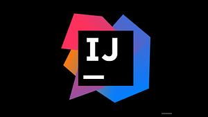
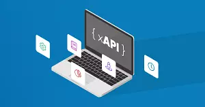
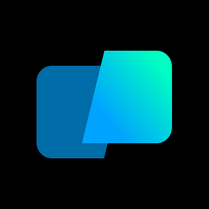

17 tháng 05
10m đọc
Top 10 lỗ hổng OWASP
04 tháng 05
8m đọc
Nguyên tắc SOLID trong lập trình: Ví dụ thực tế
25 tháng 04
12m đọc
Nhìn lại những vụ tấn công mạng đình đám trong lịch sử
21 tháng 04
23m đọc
Một số kiểu tấn công mạng mà bạn nên cảnh giác trong năm 2023
12 tháng 04
24m đọc
Top 27 ứng dụng phổ biến nhất của Thị giác máy tính trong năm
2023
Xu hướng

1
B
Top 10 lỗ hổng OWASP
27 tháng 02, 2024
53m đọc
2
B
Nguyên tắc SOLID trong
lập trình: Ví dụ thực tế
27 tháng 02, 2024
43m đọc
3
B
Nhìn lại những vụ tấn
công mạng đình đám trong lịch sử
27 tháng 02, 2024
60m đọc
4
B
Một số kiểu tấn công mạng
mà bạn nên cảnh giác trong năm 2023
27 tháng 02, 2024
117m đọc
5
B
Top 27 ứng dụng phổ biến
nhất của Thị giác máy tính trong năm 2023
27 tháng 02, 2024
126m đọc
6
B
Chỉ số hiệu suất trong
Machine Learning
27 tháng 02, 2024
139m đọc
Chủ đề nổi bật
Công nghệ
IoT
An toàn thông tin
Khoa học máy tính
Machine Learning
Blockchain
Lập trình mobile
Lập trình web
Chỉ số hiệu suất trong Machine Learning
Chỉ số hiệu suất là một phần trong
mọi
quy trình machine learning. Nó biết cho
mô hình hiện tại của bạn có tối ưu hơn trước không bằng cách sử dụng các chỉ
số.
Tất cả các mô hình machine learning bao gồm cả hồi quy tuyến tính, kỹ thuật
SOTA
như BERT đều cần số liệu để đánh giá hiệu suất. Mọi tác vụ machine learning
có
thể được chia nhỏ thành Hồi quy hoặc Phân loại giống như các chỉ số hiệu
suất.
Có đến hàng chục chỉ số cho cả hai thuật toán, nhưng chúng ta sẽ chỉ nói về
những chỉ số phổ biến cùng với thông tin chúng cung cấp về hiệu suất của mô
hình. Quan trọng là phải biết được cách mà mô hình của bạn xử lý dữ liệu như
thế
nào. Nếu bạn đã từng tham gia cuộc thi trên Kaggle, có thể bạn đã tìm hiểu
phần
đánh giá. Thông thường, có một thước đo để đánh giá hiệu suất. Chỉ số khác
với
hàm mất mát. Hàm mất mát cho ta một loại thước đo hiệu suất của mô hình, để
đào
tạo machine learning (sử dụng một số loại tối ưu hóa như Gradient Descent)
và
chúng thường khả vi với các tham số của mô hình. Các chỉ số theo dõi và đo
lường
hiệu suất của một mô hình (trong quá trình đào tạo và thử nghiệm) và không
cần
phải có tính khả vi. Tuy nhiên, trong một vài bài toán, nếu hàm hiệu suất
khả vi
thì nó cũng có thể được sử dụng như một hàm mất mát (với một số quy tắc hóa
được
thêm vào), chẳng hạn như MSE. MẸO Nếu bạn đang tìm cách tự động theo dõi các
chỉ
số hiệu suất của mô hình, hãy thử truy cập neptune.ai. Đây là nguồn tài liệu
giải thích cách thức hoạt động của các chỉ số theo dõi (có ví dụ). Chỉ số
hồi
quy Các mô hình hồi quy có đầu ra là hàm liên tục. Vì vậy, chúng ta cần chỉ
số
dựa trên các tính toán khoảng cách giữa dự báo và thực tế. Để đánh giá các
mô
hình Hồi quy, chúng ta sẽ thảo luận chi tiết về các chỉ số này: Sai số trung
bình tuyệt đối (MAE), Sai số trung bình phương (MSE), Sai số căn trung bình
phương (RMSE), Hệ số R² Lưu ý: Sử dụng bộ dữ liệu Boston Housing để cài đặt
các
chỉ số hồi quy. Sai số trung bình phương (MSE) Sai số trung bình phương, hay
còn gọi là sai số trung bình bình phương, hoặc trung bình phương lỗi, là số
liệu
phổ biến nhất được sử dụng cho các bài toán hồi quy. Về cơ bản, MSE tính giá
trị
trung bình của chênh lệch bình phương giữa giá trị mục tiêu và giá trị được
mô
hình hồi quy dự đoán. Trong đó: y_j: giá trị thực y_hat: giá trị dự đoán từ
mô
hình hồi quy N: số lượng dữ liệu Vài điểm chính liên quan đến MSE: MSE là
hàm
khả vi, vì vậy nó có thể được tối ưu hóa. Nó xử lý ngay cả những sai số nhỏ
bằng cách bình phương, điều này về cơ bản dẫn đến việc đánh giá quá thấp mô
hình. Việc giải thích lỗi phải được thực hiện với lưu ý đến hệ số bình
phương
(tỷ lệ). Ví dụ: trong bài toán hồi quy Boston Housing, MSE=21,89 chủ yếu
tương
ứng với (Giá)². Do yếu tố bình phương, nên về cơ bản, nó dễ bị sai lệch hơn
so
với các chỉ số khác. Điều này có thể được thực hiện đơn giản bằng cách sử
dụng
mảng NumPy trong Python. mse = (y-y_hat)**2 print(f"MSE: {mse.mean():0.2f}
(+/-
{mse.std():0.2f})") Sai số trung bình tuyệt đối (MAE) Sai số trung bình
tuyệt
đối là trung bình độ chênh lệch của giá trị thực và giá trị dự báo. Về mặt
toán
học, nó được biểu diễn dưới dạng: Trong đó: y_j: giá trị thực y_hat: giá trị
dự
báo từ mô hình hồi quy N: số lượng dữ liệu Vài điểm chính ở MAE MAE tốt hơn
đối
với các giá trị ngoại lai so với MSE, vì nó không phóng đại các sai số. Nó
cho
ta biết các giá trị dự đoán cách kết quả thực tế bao xa. Tuy nhiên, vì MAE
sử
dụng giá trị tuyệt đối của phần chênh lệch nên nó không cho ra ý tưởng về
hướng
của sai số (tức là ta sẽ không biết có dự đoán sai hay dự đoán quá mức dữ
liệu
hay không). Giải thích lỗi không cần phải cần cân nhắc lại, vì nó hoàn toàn
phù
hợp với bậc ban đầu của biến. MAE không khả vi. Tương tự như MSE, chỉ số này
cũng đơn giản để thực hiện. mae = np.abs(y-y_hat) print(f"MAE:
{mae.mean():0.2f}
(+/- {mae.std():0.2f})") Sai số căn trung bình phương (RMSE) Sai số căn
trung
bình phương tương ứng với căn bậc hai của trung bình cộng bình phương hiệu
số
giữa giá trị mục tiêu và giá trị được mô hình hồi quy dự đoán. Về cơ bản, nó
là
căn bậc hai của MSE. Về mặt toán học, nó có thể được biểu diễn dưới dạng:
RMSE
khắc phục được một số nhược điểm trong MSE. Vài điểm chính liên quan đến
RMSE:
RMSE giữ lại thuộc tính khả vi của MSE. RMSE xử lý sai số nhỏ tốt hơn MSE do
có
phép tính căn bậc hai. Việc giải thích lỗi có thể được thực hiện trơn tru,
vì
thang đo bây giờ giống như biến ngẫu nhiên. Vì các hệ số tỷ lệ về cơ bản đã
được
chuẩn hóa nên sẽ ít có khó khăn trong trường hợp ngoại lai hơn. Thực hiện
tương
tự như MSE: mse = (y-y_hat)**2 rmse = np.sqrt(mse.mean()) print(f"RMSE:
{rmse:0.2f}") Hệ số R² Hệ số R² thực sự hoạt động như một POST metric, nghĩa
là
đây là chỉ số được tính bằng các chỉ số khác. Mục đích của việc tính hệ số
này
là để trả lời câu hỏi “Bao nhiêu (phần trăm) của tổng các biến trong Y (mục
tiêu) được giải thích bởi các biến trong X (đường hồi quy)” Điều này được
tính
bằng cách sử dụng tổng bình phương sai số. Hãy xem qua công thức dưới đây để
hiểu rõ hơn về nó. Tổng biến trong Y (Phương sai của Y): Phần trăm biến mô
tả
đường hồi quy: Sau đó, phần trăm biến mô tả đường hồi quy: Cuối cùng, đây là
công thức cho hệ số xác định, có thể cho chúng ta biết mức độ phù hợp của
đường
hồi quy là tốt hay xấu: Hệ số này có thể được triển khai đơn giản bằng cách
sử
dụng mảng NumPy trong Python. # R^2 coefficient of determination SE_line =
sum((y-y_hat)**2) SE_mean = sum((y-y.mean())**2) r2 = 1-(SE_line/SE_mean)
print(f"R^2 coefficient of determination: {r2*100:0.2f}%") Vài điều rút ra
từ
kết quả R²: Nếu tổng bình phương sai số của đường hồi quy nhỏ => R² sẽ
xấp xỉ
1
(Lý tưởng), nghĩa là hồi quy có thể nắm bắt được 100% phương sai của biến
mục
tiêu. Ngược lại, nếu tổng bình phương sai số của đường hồi quy cao => R²
sẽ
gần
bằng 0, nghĩa là hồi quy không thể nắm bắt được bất kỳ phương sai nào trong
biến
mục tiêu. Bạn có thể nghĩ rằng phạm vi của R² là (0,1) nhưng thực ra nó là
(-∞,1) vì tỷ lệ bình phương sai số của đường hồi quy và giá trị trung bình
có
thể vượt qua giá trị 1 nếu bình phương sai số của đường hồi quy quá cao (lớn
hơn
bình phương sai số của giá trị trung bình). R² hiệu chỉnh Phương pháp
Vanilla R²
mắc phải một số nhược điểm, chẳng hạn như đánh lừa nhà nghiên cứu tin rằng
mô
hình đang được cải thiện khi điểm số tăng lên nhưng trên thực tế, việc học
không
diễn ra. Điều này có thể xảy ra khi một mô hình khớp dữ liệu quá mức, trong
trường hợp đó, phương sai được giải thích sẽ là 100% nhưng việc học chưa xảy
ra.
Để khắc phục điều này, R² được hiệu chỉnh với số lượng biến độc lập. R² đã
hiệu
chỉnh luôn nhỏ hơn R², vì nó hiệu chỉnh theo các yếu tố dự đoán ngày càng
tăng
và chỉ cho thấy điểm cải thiện nếu có điểm cải thiện thực sự. Trong đó: n =
số
giá trị quan sát k = số biến độc lập Ra² = R² hiệu chỉnh Chỉ số trong bài
toán
phân loại Bài toán phân loại là một trong những đề tài được nghiên cứu rộng
rãi
nhất trên thế giới, có mặt trong hầu hết các lĩnh vực sản xuất và công
nghiệp,
ví dụ như nhận dạng giọng nói, nhận dạng khuôn mặt, phân loại văn bản … Các
mô
hình phân loại có output rời rạc, vì vậy chúng ta cần một số liệu so sánh
các
lớp rời rạc ở một số dạng nhất định. Chỉ số phân loại đánh giá hiệu suất của
một
mô hình phân loại và cho bạn biết mức độ phân loại tốt hay xấu, nhưng mỗi
chỉ số
đánh giá nó theo một cách khác nhau. Vì vậy, để đánh giá các mô hình Phân
loại,
chúng ta sẽ thảo luận chi tiết về các chỉ số này: Accuracy Confusion Matrix
(không phải là chỉ số nhưng là nền tảng cho các chỉ số khác) Precision and
Recall F1-score AU-ROC Lưu ý: Bài viết sẽ sử dụng bộ dữ liệu UCI Breast
cancer
để triển khai các số liệu phân loại. Accuracy Classification Accuracy có lẽ
là
số liệu đơn giản nhất, dễ sử dụng và thực hiện. Nó được định nghĩa là số dự
đoán
chính xác chia cho tổng số dự đoán, nhân với 100. Điều này được thực hiện
bằng
cách so sánh ground truth và các giá trị dự đoán trong một vòng lặp hoặc chỉ
đơn
giản là sử dụng mô-đun scikit-learning. Đầu tiên, import hàm accuracy_score
từ
lớp metrics from sklearn.metrics import accuracy_score Sau đó, sử dụng
ground
truth và giá trị dự đoán để xác định độ chính xác của mô hình:
print(f'Accuracy
Score is {accuracy_score(y_test,y_hat)}') Confusion Matrix Confusion Matrix
là
một bảng trực quan hóa các nhãn ground- truth so với các dự đoán mô hình.
Mỗi
hàng của Confusion Matrix biểu thị các instance trong một lớp dự đoán và mỗi
cột
biểu thị các instance trong một lớp thực tế. Confusion Matrix không phải một
thước đo hiệu suất mà là cơ sở để các thước đo khác đánh giá kết quả. Để
hiểu
Confusion Matrix, chúng ta cần đặt một số giá trị cho giả thuyết không như
một
giả định. Ví dụ: từ dữ liệu về Ung thư vú, hãy giả sử Giả thuyết không H⁰ là
“Bị
ung thư”. Confusion Matrix cho H⁰ Mỗi ô trong Confusion Matrix đại diện cho
một
yếu tố đánh giá. Hãy cùng tìm hiểu từng yếu tố này: True positive(TP) thể
hiện
số lớp dương tính mà mô hình đã dự đoán đúng. True Negative(TN) thể hiện số
lớp
âm tính mà mô hình đã dự đoán đúng. False Negative(FP) thể hiện số lượng các
dự
đoán sai lệch. Là khi mô hình dự đoán một người dương tính và người đó hoàn
toàn
khỏe mạnh. Yếu tố này đại diện cho Type I error (sai lầm loại I) trong thống
kê.
Vị trí lỗi này trong Confusion Matrix phụ thuộc vào việc lựa chọn giả thuyết
null. False Negative (FN) cho biết số lượng các dự đoán sai lệch một cách
gián
tiếp. Là khi mô hình dự đoán một người âm tính thành dương tính, tức là việc
không chọn trường hợp dương tính là sai. Yếu tố này đại diện cho Type II
error
(sai lầm loại II) trong thống kê. Vị trí lỗi này trong Confusion Matrix cũng
phụ
thuộc vào việc lựa chọn giả thuyết null. Chúng ta có thể tính toán các giá
trị ô
bằng code bên dưới: def find_TP(y, y_hat): # counts the number of true
positives
(y = 1, y_hat = 1) return sum((y == 1) & (y_hat == 1)) def find_FN(y,
y_hat): #
counts the number of false negatives (y = 1, y_hat = 0) Type-II error return
sum((y == 1) & (y_hat == 0)) def find_FP(y, y_hat): # counts the number
of
false
positives (y = 0, y_hat = 1) Type-I error return s…
22 tháng 02
29m đọc
Perflint- Công cụ hiệu suất trong Python
Giúp phát hiện sớm các vấn đề về hiệu
suất và tìm hiểu cách viết mã hoạt động
tốt hơn trong quá trình thực hiện Trong lĩnh vực phát triển phần mềm hiện
đại,
hiệu suất chiếm vị trí quan trọng hàng đầu, trong nỗ lực thử nghiệm cũng như
trong quá trình phát triển của chính nó. Bài viết này sẽ trình bày cách bạn
có
thể dễ dàng tích hợp tính năng hiệu suất vào quá trình phát triển ứng dụng
python và đưa ra mã tốt hơn. Kỹ thuật Hiệu suất Kỹ thuật hiệu suất là một
lĩnh
vực kỹ thuật phần mềm đang phát triển, dùng để chủ động cân nhắc hiệu suất.
Một
cách tiếp cận trực quan hơn đối với hiệu suất sẽ là chạy các bài kiểm tra
hiệu
suất trong khi kết thúc dự án và làm cho hiệu suất này kết thúc sau khi tất
cả
các yêu cầu chức năng được hoàn thành. Tuy nhiên, cách này không hiệu quả và
tốn kém. Một nghiên cứu dân tộc học gần đây, được xuất bản trên Tạp chí Kỹ
thuật
Phần mềm Empirical, nhằm khám phá các thực tiễn phổ biến về đảm bảo hiệu
suất.
Có một số chuyên gia công nghệ liên tục phỏng vấn trong 6 tháng, nhà nghiên
cứu
kết luận rằng: ‘’ Nghiên cứu cho thấy rằng tổ chức trường hợp vẫn dựa vào
cách
tiếp cận giống như thác nước để đảm bảo hiệu suất. Cách tiếp cận như vậy
không
phù hợp với kỹ thuật và phương pháp phát triển phần mềm theo triết lý Agile,
do
đó dẫn đến việc quản lý các hoạt động đánh giá hiệu suất ở dưới mức tối ưu.
Nếu
bạn cố gắng cải thiện quy trình đảm bảo hiệu suất thì sẽ nhận ra có ba thách
thức chính: (i) quản lý các hoạt động đánh giá hiệu suất, (ii) đánh giá hiệu
suất liên tục và (iii) xác định nỗ lực đánh giá hiệu suất.’’ Điều này minh
họa
tầm quan trọng của việc đảm bảo hiệu suất được ưu tiên trong vòng đời phát
triển
phần mềm và tuân thủ các phương pháp agile thay vì phương pháp tiếp cận thác
nước. Tối ưu hóa sớm Vấn đề thực sự là các lập trình viên đã dành quá nhiều
thời
gian để lo lắng về hiệu quả không đúng lúc và không đúng chỗ; tối ưu hóa quá
sớm
là gốc rễ của mọi vấn đề (hoặc ít nhất là hầu hết) trong lập trình. Trích
dẫn
này được trích từ cuốn sách 'Nghệ thuật lập trình máy tính' xuất bản năm
1968,
được viết bởi Donald Knuth, người đoạt giải Turing năm 1974. Từ hơn 60 năm
trước, Knuth đã lập luận rằng các lập trình viên có xu hướng suy nghĩ trực
quan
về hiệu suất. Họ thường cho rằng những phần mã khó hiểu hơn sẽ tốn nhiều
thời
gian nhất để thực thi. Và về tổng thể, tuyên bố của ông nhằm cảnh báo các
lập
trình viên không nên tối ưu hóa mã của họ một cách mù quáng mà không có hồ
sơ.
Tuy nhiên, nhiều lập trình viên đã lập luận mà bỏ qua ngữ cảnh ban đầu và
giải
thích nó như thể bất kỳ nỗ lực nào để tối ưu hóa một chương trình phải diễn
ra ở
giai đoạn cuối cùng của quá trình phát triển ứng dụng và lập luận này là
sai.
Tối ưu hóa hiệu suất là một phần của thiết kế và triển khai phần mềm, và nó,
giống như tất cả các nỗ lực phát triển phần mềm khác, nên được ưu tiên về
mặt
rủi ro và lợi ích. Giới thiệu perflint Công cụ hiệu suất là một công cụ cụ
thể
hơn, nhằm mục đích phát hiện các mẫu chống hiệu suất trong mã. Pylint có thể
được mở rộng rất dễ dàng với các plugin để thêm nhiều chức năng kiểm tra
hơn. Vì
vậy, các lập trình viên python xuất sắc cùng với tác giả Anthony Shaw, đã
phát
triển một plugin để mở rộng pylint nhằm phát hiện các vấn đề về hiệu suất.
Sử
dụng linter này, các lập trình viên python có thể tăng hiệu suất ứng dụng và
cũng có thể tìm hiểu về nội bộ của python và cách nó ảnh hưởng đến hiệu
suất.
Thực hành Hãy xem một đoạn mã không hữu ích lắm dưới đây: """this is my main
module (DUH!)""" GLOBAL_VAR = 2 def main(): """main endpoint""" some_list =
[1,
2, 3, 4] for some_item in some_list: print(some_item ** GLOBAL_VAR) if
__name__
== "__main__": main() Vì vậy, nó có một biến toàn cục được đặt thành 2, hàm
main
và mệnh đề main. Hàm main có một danh sách cục bộ các biến số nguyên, nó lặp
lại
danh sách và in từng số này nhờ biến toàn cục. Hãy chạy mã: python
example.py
Kết quả 1 4 9 16 Bây giờ hãy phân tích mã này, trước tiên, bạn cần cài đặt
pylint bằng cách sử dụng pip: pip install pylint Bây giờ, hãy chạy pylint
pylint
example.py Và kết quả là:
-------------------------------------------------------------------- Your
code
has been rated at 10.00/10 (previous run: 10.00/10, +0.00) Không có lỗi nào
và
mã đạt điểm 10/10. Bây giờ hãy thêm perflint pip install perflint Bây giờ
bạn
đã có thể chạy pylint và sử dụng perflint làm plugin! pylint --load-plugins
perflint example.py Kết quả: ************* Module __main__
myapp\__main__.py:8:27: W8202: Lookups of global names within a loop is
inefficient, copy to a local variable outside of the loop first.
(loop-invariant-global-usage) myapp\__main__.py:6:16: W8301: Use tuple
instead
of list for a non-mutated sequence (use-tuple-over-list)
------------------------------------------------------------------ Your code
has
been rated at 7.14/10 (previous run: 5.00/10, +2.14) Perflint đã tìm thấy 2
vấn
đề và điểm mã giảm xuống còn 7,14! Hãy xem xét hai vấn đề sau: Vấn đề 1 -
Tra
cứu tên toàn cục trong vòng lặp Hãy tập trung vào vòng lặp, bạn đang lặp lại
danh sách và sau đó sử dụng biến toàn cục. Tra cứu các biến toàn cục yêu cầu
trình thông dịch python thực hiện tra cứu trên toàn bộ lĩnh vực tên và chỉ
mục,
đây là lệnh gọi STORE_NAME của trình thông dịch byte bytecode của python Tuy
nhiên, khi bạn xác định một hàm, nó có một số lượng biến cục bộ cố định, để
python có thể đặt một mảng cố định và dễ dàng tìm thấy giá trị được liên kết
với
tên biến cục bộ, đây là lệnh gọi STORE_FAST của trình thông dịch byte
bytecode
của python. Vì vậy, một cách khắc phục nhanh chóng là lưu trữ biến toàn cục
trong một biến cục bộ và sau đó sử dụng biến cục bộ đó bên trong vòng lặp.
"""this is my main module (DUH!)""" GLOBAL_VAR = 2 def main(): """main
endpoint""" some_list = [1, 2, 3, 4] local_var = GLOBAL_VAR for some_item in
some_list: print(some_item ** local_var) if __name__ == "__main__": main()
Bây
giờ, hãy perflint lần nữa: pylint --load-plugins perflint example.py Kết
quả:
************* Module __main__ myapp\__main__.py:6:16: W8301: Use tuple
instead
of list for a non-mutated sequence (use-tuple-over-list)
------------------------------------------------------------------ Your code
has
been rated at 8.75/10 (previous run: 7.14/10, +1.61) Tuyệt vời, vấn đề đầu
tiên
đã được giải quyết. Bây giờ, giờ là đến sự cố thứ hai. Vấn đề 2— Sử dụng một
bộ
giá trị thay vì một danh sách Biến danh sách trong mã không bao giờ thay
đổi, vì
vậy bạn nên sử dụng các đối tượng không thay đổi trong trường hợp này. Đối
tượng
bất biến được ưu tiên ở đây sẽ là một bộ. Vì vậy, hãy khắc phục sự cố này:
"""this is my main module (DUH!)""" GLOBAL_VAR = 2 def main(): """main
endpoint""" some_list = (1, 2, 3, 4) local_var = GLOBAL_VAR for some_item in
some_list: print(some_item ** local_var) if __name__ == "__main__": main()
và
bây giờ perflint pylint --load-plugins perflint example.py Kết quả:
------------------------------------------------------------------- Your
code
has been rated at 10.00/10 (previous run: 8.75/10, +1.25) Điểm xuất sắc!
Điểm
cộng Hãy so sánh giữa ví dụ nhanh chậm trong mã """this is my main module
(DUH!)""" from timeit import timeit GLOBAL_VAR = 2 def fast_main(): """main
endpoint""" some_list = (1, 2, 3, 4,
5,6,7,8,9,10,11,12,13,11,11,11,11,11,11,11,11,11,11,11,11,11,11,11,11,11,11,11,11,11,11)
local_var = GLOBAL_VAR for some_item in some_list: some_item**local_var def
slow_main(): """main endpoint""" some_list = [1, 2, 3, 4,
5,6,7,8,9,10,11,12,13,11,11,11,11,11,11,11,11,11,11,11,11,11,11,11,11,11,11,11,11,11,11]
for some_item in some_list: some_item**GLOBAL_VAR if __name__ == "__main__":
print(f"fast_main execution time = {timeit(fast_main):.2} sec")
print(f"slow_main execution time = {timeit(slow_main):.2} sec") Sử dụng
timeit
để đánh giá phiên bản 'nhanh' thực sự nhanh hơn bao nhiêu: Chạy: python
example.py Kết quả: fast_main execution time = 7.155288799898699 usec
slow_main
execution time = 7.3095553000457585 usec 7,15 useconds cho phiên bản "nhanh"
so
với 7,31 useconds cho phiên bản "chậm". Nếu bạn thấy bài viết hữu ích
thì hãy tiếp tục theo dõi và ủng hộ các bài viết tiếp theo của
Tek4.vn nhé!
14 tháng 02
10m đọc
SQL Like A Pro: Hãy ngưng sử dụng
Distinction!!
Con người có xu hướng làm đủ mọi cách
giả
định. Một giả định xuất hiện nhiều
nhất, đó là “DISTINCT” là một loại từ khóa ma thuật đen giải quyết tất cả
các
vấn đề “sao chép” của bạn. Điều gì sẽ xảy ra nếu tôi nói với bạn rằng bạn có
thể
sai? Bạn không chỉ sai mà còn đốt một lượng lớn máy tính / tiền mà cuối cùng
vẫn
sai? “DISTINCT”: Từ khóa Đắt tiền Để đảm bảo cơ sở dữ liệu không có bản sao
trong tập dữ liệu, nó cần phải so sánh tất cả các hàng với nhau, loại bỏ các
hàng lặp lại. Điều này yêu cầu: nhiều CPU - so sánh số lượng lớn các hàng là
một
công việc khó khăn… vô số bộ nhớ để lưu trữ tất cả các hàng - tất cả các
hàng
cần được so sánh với nhau, có nghĩa là bạn cần tất cả chúng có sẵn trong bộ
nhớ
(ngay cả khi chỉ là một hàm băm, tùy thuộc vào việc triển khai thuật toán
cấp
thấp) giảm khả năng xử lý song song - ngay cả khi bạn có thể thực hiện song
song
một phần của phép tính này, sẽ là một vấn đề khó khăn để kết hợp song song
một
cách hiệu quả “DISTINCT” là một từ khóa thực sự đắt tiền nhưng điều tồi tệ
nhất
là nó thường bị sử dụng sai… Dùng một giải pháp cho mọi vấn đề “ Dùng một
cái
búa cho mọi lỗ hổng, giống như dùng một giải pháp cho mọi vấn đề” “DISTINCT”
làm
gì: loại bỏ các bản sao. Vậy “DISTINCT” KHÔNG làm được điều gì ? KHÔNG giải
quyết các liên kết và bộ lọc không chính xác (dẫn đến các bản sao ngay từ
đầu)
KHÔNG đọc được suy nghĩ của bạn và tìm hiểu ý bạn bằng “DISTINCT” KHÔNG giải
quyết một cách kỳ diệu các vấn đề mã của bạn Hầu hết các trường hợp
"DISTINCT"
được sử dụng do lười biếng và nhiều giả định: John DoeDoe thực hiện một truy
vấn
lớn cố gắng tìm “nền tảng đầu tiên được khách hàng sử dụng”. Kết quả cuối
cùng
có nhiều hơn 1 hàng cho mỗi khách hàng. John DoeDoe nghĩ “Ồ, một bản sao…
Tôi
biết cách khắc phục điều này!”. John DoeDoe viết "DISTINCT". Xong! Vấn đề là
John không ngừng nghĩ về lý do: Tại sao anh ta nhận được nhiều hơn 1 hàng
cho
mỗi khách hàng? ***** Những lý do (SAI) phổ biến nhất khi sử dụng “DISTINCT”
Lý
do phổ biến nhất mà mọi người sử dụng (sai) "DISTINCT" là lỗi logic và giả
định
sai. Logic lọc sai Khi sử dụng bảng được tạo phiên bản (như thứ nguyên loại
2),
mọi người sẽ nhận được "bản sao" do có nhiều phiên bản. Các truy vấn tạo ra
cùng
một kết quả, nhưng “DISTINCT” vừa sai vừa nguy hiểm… Logic tham gia sai Một
trong các phép nối được xác định không chính xác và cuối cùng bạn sẽ có các
bản
sao do một phép nối chéo. Sử dụng RANK thay vì ROW_NUMBER Không phải ai cũng
hiểu sự khác biệt giữa rank () và row_number (), kết thúc bằng các bản sao
do
cửa sổ phân vùng được xác định kém. Nhiều lần thanh toán trong một ngày sẽ
tạo
ra nhiều mục nhập cho cùng một người dùng Giả định sai Có thể bạn cho rằng
tất
cả các lần đăng nhập đều có dấu thời gian khác nhau, nhưng thực sự có một
lỗi
trong hệ thống cho phép 2 lần đăng nhập cùng một lúc… (Được đề cập trong
phần
tiếp theo) Tin xấu: “DISTINCT” KHÔNG giải quyết được vấn đề của bạn Đây thực
sự
là phần tồi tệ nhất: “DISTINCT” thậm chí không giải quyết được vấn đề của
bạn,
bởi vì mặc dù bạn nhìn thấy các bản sao, cơ sở dữ liệu không đồng ý. Bởi vì
bạn
đang theo đuổi một bảng có 1 hàng cho mỗi khách hàng, đầu bạn nghĩ rằng
“DISTINCT” sẽ cung cấp cho bạn một hàng cho mỗi khách hàng, nhưng đó không
phải
là cách hoạt động… Chẳng hạn như ví dụ sau: WITH first_user_login AS (
SELECT
user, MIN(login_ts) AS min_date FROM logins GROUP BY 1 ) SELECT user,
platform
as first_login_platform, ... FROM logins WHERE (user, login_ts) IN (SELECT
user,
min_date FROM first_user_login) Bạn chạy truy vấn này và nhận được nhiều hơn
1
hàng cho cùng một người dùng, nhưng thay vì nghĩ tại sao, bạn chỉ cần thêm
“DISTINCT”. Bạn nhìn vào 100 hàng đầu tiên và tất cả đều ổn, hoàn hảo để sản
xuất! Tuy nhiên, nếu để ý kỹ hơn, bạn sẽ thấy rằng một số người dùng gặp
phải
điều kiện hệ thống nguồn trong đó nếu người dùng đăng nhập trên cả máy tính
xách
tay và điện thoại di động cùng một lúc, cả hai thông tin đăng nhập sẽ nhận
được
cùng một dấu thời gian. Điều này không xảy ra đủ thường xuyên để bạn nắm bắt
được khi bạn thực hiện xác thực nhãn cầu hàng 100 của mình, nhưng điều này
giờ
đây sẽ tạo ra các “bản sao” ở hạ lưu, mà bạn có thể sẽ sử dụng các
“DISTINCT” kỳ
diệu hơn để giải quyết. Nhưng đến một lúc nào đó, bạn sẽ tổng hoặc đếm những
thứ
này, và bạn sẽ trả lời sai … *** Cách tiếp cận “DISTINCT” Bạn nên tiếp cận
tất cả các “DISTINCT” cùng sự nghi ngờ và hơn hết, bạn không bao giờ được
cho
rằng dữ liệu bị trùng lặp: nhiều hàng đến từ một nơi nào đó, bạn cần phải
tìm ra
từ đâu. Có một số tình huống yêu cầu “DISTINCT”, chẳng hạn như tin nhắn
truyền
trực tuyến có thể được truyền nhiều lần. Đây là một bản sao trung thực,
không có
cách nào xung quanh nó… nhưng bạn nên luôn để lại nhận xét nói chính xác lý
do
tại sao yêu cầu “DISTINCT” đó, nếu không, bạn có thể khiến người khác thắc
mắc
tại sao bạn cần nó ngay từ đầu. *** Lời cuối Đã có nhiều trường hợp lạm dụng
"DISTINCT" trong nhiều năm và thường xuyên hơn là chúng chỉ che giấu mã xấu
một
cách kém hiệu quả. Các “bản sao” vẫn ở đó, bởi vì chúng thậm chí không phải
là
bản sao ngay từ đầu… Vậy, "DISTINCT" có phải là một từ khóa xấu không?
Không, nó
không phải, nó phục vụ mục đích của nó. Các giải pháp đều có hiệu quả cho
vấn
đề, cũng như “DISTINCT” rất tốt cho các bản sao. Đừng giống như John
DoeDoe….
Cảm ơn bạn đã đọc bài viết! Nếu bạn thấy bài viết hữu ích thì hãy
tiếp
tục theo dõi và ủng hộ các bài viết tiếp theo của Tek4.vn nhé!
14 tháng 02
8m đọc
Tạm biệt Notebook Jupyter. Xin chào
DataSpell!
IDE dành cho các nhà khoa học dữ liệu
chuyên nghiệp. Nếu bạn thích Pycharm, bạn
sẽ thích DataSpell. Các IDE như Pycharm không dành cho khoa học dữ liệu, vì
vậy
bước bổ sung đó là bắt buộc… cho đến khi DataSpell được ra đời. DataSpell có
một số tính năng điển hình mà bạn mong đợi từ một sổ ghi chép, chẳng hạn như
chế
độ lệnh, chế độ soạn thảo, điều hướng ô, phím tắt sổ ghi chép và kết quả đầu
ra
tương tác (thậm chí cả hình ảnh trực quan). Điều đó nói rằng, đây là một IDE
mạnh mẽ hơn cho các nhà khoa học dữ liệu chuyên nghiệp. Đây là lý do tại sao
DataSpell được ưa chuộng hơn Jupyter Notebook (và Pycharm). Hỗ trợ đáng kể
quá
trình mã hóa và hỗ trợ Markdown Một trong những điều khá bất lợi ở Jupyter
Notebook là hỗ trợ mã hóa của nó. Bạn có thể bật tiện ích mở rộng
“hinterland”
để bật tính năng tự động hoàn thành nhưng nó hoạt động khá kém. Nếu bạn nhấn
nút
tab, nó đôi khi viết lại toàn bộ tên biến (thay vì chỉ điền phần còn lại của
tên) và những lần khác sẽ tự động hoàn thành các từ mà thậm chí không cho
phép
bạn nhấn Enter. Hỗ trợ mã hóa của DataSpell cũng tiện ích như của Pycharm.
Có
hoàn thành mã thông minh, kiểm tra lỗi và nhiều thứ khác có sẵn. Ngoài ra,
DataSpell có hỗ trợ Markdown, có nghĩa là tập lệnh của bạn sẽ vẫn có “kiểu
sổ
ghi chép” với các dòng tiêu đề h1, h2, h3, văn bản thuần túy, danh sách được
đánh số, dấu đầu dòng, v.v. (mặc dù vậy, LaTeX vẫn chưa được hỗ trợ) .
Output
trực quan lý tưởng Một trong những điều thú vị mà Jupyter Notebook có là khả
năng xuất hình ảnh trực quan mà không cần cài đặt gì thêm. Pycharm thì không
như
vậy, nhưng DataSpell đã khắc phục điều này một cách tuyệt vời! Chỉ cần mở
tệp
.ipynb có chứa mã tạo ra các hình ảnh trực quan, và tất cả chúng đều được
hiển
thị đẹp mắt. Hỗ trợ trực quan hóa tương tác! Đoán xem nào? Dataspell hoạt
động
tốt với các thư viện hình ảnh hóa tương tác như Plotly, Bokeh, Altair và
ipywidgets. Dưới đây là hình ảnh tương tác đã tạo với Pandas và cufflinks
trong
hướng dẫn này: Kiểm soát phiên bản, Thiết bị đầu cuối, Tích hợp Cơ sở dữ
liệu và
Trình gỡ lỗi Một số tính năng thú vị mà IDE hoàn chỉnh như Pycharm có (và
thiếu
notebook Jupyter) là kiểm soát phiên bản, truy cập đầu cuối dễ dàng và tích
hợp
cơ sở dữ liệu. Phiên bản kiểm soát Phiên bản kiểm soát giúp theo dõi và quản
lý các thay đổi đối với mã phần mềm. Hệ thống phiên bản kiểm soát phổ biến
mà
bạn có thể đã sử dụng để quản lý các thay đổi đối với mã nguồn là Github.
Với
DataSpell, bạn có thể sao chép các dự án Git, cam kết và đẩy các thay đổi,
làm
việc với các nhánh và hơn thế nữa! Thiết bị đầu cuối máy tính DataSpell có
một
thiết bị đầu cuối tích hợp hỗ trợ các lệnh có sẵn trên hệ điều hành của bạn.
Thiết bị đầu cuối có sẵn bên dưới tập lệnh của bạn, vì vậy không cần mở cửa
sổ
thứ hai để làm việc lại với thiết bị đầu cuối! Công cụ cơ sở dữ liệu Nếu bạn
làm
việc với các cơ sở dữ liệu như MongoDB, MySQL và Oracle hàng ngày thì có một
tin
vui: DataSpell có thể kết nối với cơ sở dữ liệu, vì vậy bạn có thể truy cập
và
truy vấn cơ sở dữ liệu ngay từ IDE. Dưới đây là danh sách đầy đủ các công cụ
cơ
sở dữ liệu được hỗ trợ: Trình gỡ lỗi Notebook Jupyter thiếu trình gỡ lỗi có
thể
giúp dễ dàng phát hiện và loại bỏ lỗi trong mã của mình. May mắn thay,
DataSpell
có trình gỡ lỗi được hỗ trợ cho cả sổ ghi chép Jupyter và tập lệnh Python.
Điều
này có nghĩa là chúng ta có thể làm những việc như dừng lại ở các điểm ngắt,
quản lý các biến và hơn thế nữa. Cuối cùng là trình bổ trợ (plugin) Điều
được
ưa thích ở Pycharm và DataSpell là các plugin. Họ có sẵn một loạt plugin để
chúng ta tải xuống và giúp các thao tác trở nên dễ dàng hơn. Hầu hết các
plugin
đã cài đặt cho Pycharm đều có sẵn cho DataSpell. Ví dụ: sử dụng Rainbow CSV
để
đặt các màu khác nhau cho các cột trong tệp CSV được mở bằng Pycharm (không
quá
cần thiết trên DataSpell nhờ hỗ trợ bảng). Tất cả các tính năng được mô tả
trong
bài viết này là một số lý do tại sao nên chuyển từ Jupyter Notebook sang
DataSpell. Luôn luôn là một ý kiến hay khi bạn không nên gắn bó với một mà
hãy
khám phá các lựa chọn khác nhau. Công cụ không phải thứ sẽ ở lại với chúng
ta
mãi mãi mà là kiến thức nhận được khi sử dụng công cụ phù hợp nhất với nhu
cầu
của chúng ta. Nếu bạn thấy bài viết hữu ích thì hãy tiếp tục theo
dõi và ủng hộ các bài viết tiếp theo của Tek4.vn nhé!
14 tháng 02
6m đọc
Cách xóa chuỗi câu lệnh if-else trùng lặp
Khi làm việc với bất kỳ ngôn ngữ lập
trình nào khác, chúng ta sẽ phải xử lý rất
nhiều khối câu điều kiện if-else, đôi khi sẽ xuất hiện các câu lệnh if/else
hoặc
switch khá dài dòng. Trong một số trường hợp, chúng ta cần thực hiện nhiều
điều
kiện if-else như trên. Và giải pháp cho vấn đề này là chúng ta có thể xóa
các
câu lệnh if này để đoạn code của ngắn gọn và dễ đọc hơn. Vậy, làm thế nào
chúng
ta có thể loại bỏ những câu điều kiện if-else trùng lặp này? Ta có thể sử
dụng
biểu đồ: Đối với các chuỗi ký tự, ta có thể sử dụng HashMap. Đối với các
enum,
hãy sử dụng EnumMap thay vì HashMap. Thay vì sử dụng các điều kiện if-else,
chúng tôi sẽ sử dụng biểu đồ. Hãy đảm bảo rằng các điều kiện phù hợp với
biểu
đồ. Thay vì viết trình xử lý logic cho từng trường hợp, ta sẽ dùng biểu đồ
với
case (trường hợp) và logic để dưới dạng các cặp value-key. Do đó, chúng tôi
có
thể lấy logic từ bản đồ dựa trên key. Nếu bạn thấy bài viết hữu ích
thì
hãy tiếp tục theo dõi và ủng hộ các bài viết tiếp theo của
Tek4.vn
nhé!
14 tháng 02
2m đọc

Mẹo sử dụng IntelliJ để gỡ lỗi hiệu quả
Rất nhiều người vẫn sử dụng các câu
lệnh
print để gỡ lỗi. Tuy cách này vẫn có
những hiệu quả nhất định nhưng khi gặp những lỗi phức tạp hơn, phương pháp
này
sẽ không còn hữu ích nữa. Vậy nên trong bài này, Tek4 sẽ giới thiệu cho các
bạn
một trình gỡ lỗi hiệu quả mang tên IntelliJ IDE. IntelliJ IDEA là gì?
IntelliJ
IDEA là một môi trường lập trình đặc biệt, hay còn gọi là môi trường phát
triển
tích hợp (IDE) chủ yếu dành cho Java. Môi trường này được sử dụng đặc biệt
để
phát triển các chương trình. Điều làm cho IntelliJ IDEA trở nên khác biệt so
với
các đối tác của nó là tính dễ sử dụng, tính linh hoạt và thiết kế chắc chắn
của
nó. Nó cũng có các tính năng kiểm tra lỗi nâng cao cho phép kiểm tra lỗi
nhanh
hơn và dễ dàng hơn. Các cách sử dụng IntelliJ Gián đoạn lệnh điều kiện Ta sẽ
nhấp chuột phải vào một breakpoint đã được đặt sẵn để mở cửa sổ pop-up cùng
với
một vài tùy chọn. Ta sẽ vào phần Condition, nơi có thể đặt một biểu thức
đánh
giá boolean bằng cách sử dụng các biến trong dòng và trình gỡ lỗi sẽ gián
đoạn
lệnh điều kiện nếu điều kiện là True. Dừng hoạt động của 1 luồng nào đó Theo
mặc
định, khi cửa sổ hiện lên, ta sẽ thấy nút radio All được chọn. Tuy nhiên,
nếu
bạn chọn nút Thread, ta chỉ có thể ngừng hoạt động của luồng thực hiện dòng
mã
nơi có breakpoint. Phương pháp này sẽ rất hữu ích khi các luồng có thể sẽ tự
bỏ
exception và chết khi bị ngừng hoạt động. Việc dừng hoạt động của 1 luồng có
thể
giúp cho ứng dụng hoạt động ổn định trong khi ta đang kiểm tra các đoạn code
đang gặp vấn đề. In lệnh gỡ lỗi trên steroid Lưu ý rằng ở đầu bài viết, ta
đã đề
cập đến việc in các câu lệnh chưa bao giờ là cách gỡ lỗi tối ưu cả. . Đó là
vì
ta sẽ cần khởi động lại ứng dụng mỗi khi cần chỉnh sửa hoặc thêm lệnh in. Và
tệ
hơn, bạn có thể vô tình lưu chúng và để lộ ra những thông tin mật hoặc dẫn
tới
bị spam trong các log. Vì vậy, ta hãy dùng lệnh in từ các tùy chọn IntelliJ
cung
cấp. Trong cửa sổ bật lên mặc định, ta sẽ thấy ô Suspend đã được tick. Nếu
bỏ
chọn nó, cửa sổ sẽ mở rộng với nhiều tùy chọn hơn. Một trong số đó là
Evaluate
and log. Khi chọn ô này, mỗi khi trình gỡ lỗi tạm dừng, nó sẽ in tất cả các
câu
lệnh trong hộp văn bản đó đánh giá thay thế. Nó có thể là một chuỗi ký tự
hoặc
là biến. Exception breakpoint (Tự động tìm dòng code bị exception) Đôi khi
ta
không thể xác định chính xác đường dây gây ra vấn đề. Ví dụ: trong các ứng
dụng
đa luồng, các exception đang bị nuối và gây ra lỗi ở khắp nơi hoặc ta không
chắc
chắn exception được ném từ đâu do thiếu phần logging (ghi lại) thích hợp.
Trong
những trường hợp đó, bạn có thể thêm một exception breakpoint. Khi nhấn Ctrl
+
Shift + F8 | Cmd + Shift +F8, ta sẽ thấy cửa sổ này liệt kê tất cả các
breakpoint hiện đã thêm vào. Ngoài ra, ta có thể thêm breakpoint vào phần
Any
Exception cho ngôn ngữ của dự án hiện tại hoặc một lớp exception cụ thể. Hãy
nhớ
rằng đôi khi các framework như Spring có thể chứa exception từ đầu khi khởi
động. Vì vậy, sẽ hơi khó chịu khi khởi động ứng dụng với loại exception đó
và
một vài chỗ sẽ bị ngưng hoạt động. Ngoài ra, nhìn vào bảng điều khiển bên
phải,
các breakpoint cũng tuân theo các quy tắc tương tự và cung cấp các tùy chọn
tương tự như các tùy chọn dòng. Debugger Pane Ta cùng nhìn vào một số nút
trong
ô Debugger. Variables Đây là tab quen thuộc nhất với mọi người - bên cạnh
việc
di chuột qua các biến trong phạm vi, ta có thể xem lại các giá trị của chúng
tại
thời điểm đó trong ô variables. Frames Tab ít quen thuộc hơn một chút là ô
về
Frame. Điều thú vị ở đây ta không chỉ nhìn thấy stacktrace (đường dẫn của
ứng
dụng đến dòng mã này) mà còn có thể xem lại lịch sử. Ta có thể nhấp vào các
frame riêng lẻ và xem lại các giá trị của các biến trong phạm vi đó tại thời
điểm code đi qua nó. Điều này cực kỳ hữu ích khi ta theo dõi các giá trị bất
ngờ. Threads Tab cuối cùng ở đây là Threads. Tab nay cung cấp một cách để
kiểm
tra xem tất cả các luồng khác ở đâu (nếu chúng cũng bị đình chỉ) tại thời
điểm
đó. Profiling Đôi khi, một breakpoint là không đủ và ta cần sử dụng một số
công
cụ nâng cao hơn. Đây chủ yếu là những công cụ được sử dụng để phát hiện rò
rỉ bộ
nhớ và sử dụng CPU cao. Profiler trong IntelliJ cung cấp rất nhiều hàm hữu
ích
mà trước đây chúng ta cần các công cụ bên ngoài. Ta có thể mở ô Profiler
thông
qua View Menu|Tool Windows|Profiler. Nếu có một chương trình Java đang chạy,
nó
sẽ xuất hiện ở đó. CPU và Memory Live Chart Tính năng này sẽ hiển thị cho ta
một
biểu đồ thời gian về bộ nhớ và việc sử dụng CPU của ứng dụng trong khi nó
đang
chạy. Nó sẽ rất hữu ích nếu ta muốn đánh giá vị trí của ứng dụng về việc sử
dụng
tài nguyên hoặc phát hiện bất kỳ bất thường nào trong một trong hai ứng dụng
đó.
Capture Memory Snapshot Chụp lại bộ nhớ là một bước cần thiết đối với các
live
chart. Ta có thể thấy các đối tượng thực tế lấp đầy bộ nhớ đó và điều này có
thể
giúp ta xác định vấn đề rò rỉ bộ nhớ đến từ đâu. Đính kèm profiler Đính kèm
một
profiler, hay là chạy ứng dụng với một profiler, sẽ cung cấp rất nhiều thông
tin
như một danh sách tất cả các phương pháp được thực hiện trong khi profiler
đang
chạy, tất cả các sự kiện đã xảy ra (chẳng hạn như GC, bộ nhớ alloc vv) và
nhiều
hơn nữa. Get Thread Dump Điều này sẽ in stacktrace cho tất cả các luồng
trong
ứng dụng tại thời điểm đó. Hy vọng một số mẹo mới trên đây của Tek4 sẽ giúp
các
bạn sử dụng IntelliJ một cách hiệu quả hơn nhé!
14 tháng 02
8m đọc

XAPI là gì?
Rất nhiều tổ chức đang cố gắng mang
đến
những trải nghiệm học tập đặc biệt cho
người học vì họ đã nhận ra những lợi ích lâu dài của nó. Để chuyển đổi môi
trường học tập và xác nhận mức độ tương tác & giữ chân người học, các
nhà
cung
cấp cố gắng triển khai xAPI trong các sản phẩm của họ. Việc tích hợp một
xAPI
đòi hỏi kiến thức toàn diện về các câu lệnh, tài liệu, LRS và hệ sinh thái
hoàn
chỉnh của quá trình học tập cấp doanh nghiệp. Bài viết sẽ hướng dẫn bạn
thông
qua nhu cầu về Experience API để có trải nghiệm học tập liên tục và luồng dữ
liệu liền mạch vào một hệ sinh thái học tập. Tổng quan về Experience API
(xAPI)
xAPI là một đặc điểm kỹ thuật thu thập nhiều loại dữ liệu về trải nghiệm học
tập
của người dùng. Trước tiên, một API nắm bắt luồng hoạt động của cá nhân hoặc
nhóm ở một định dạng nhất quán, sau đó được truyền đạt an toàn bằng cách sử
dụng
từ vựng đơn giản của xAPI. xAPI là một phương pháp nâng cao, đơn giản và
linh
hoạt hơn để sử dụng so với các thông số kỹ thuật trước đó. Học ngoại tuyến,
học
qua trải nghiệm, học qua mạng xã hội, thế giới ảo, trò chơi, giải pháp học
trên
thiết bị di động, học cộng tác và hơn thế nữa có thể dễ dàng sử dụng xAPI để
dễ
dàng truy xuất dữ liệu. Chức năng của xAPI Một xAPI ghi lại các tương tác
của
mọi người với những người khác, nội dung, v.v. kích hoạt các hành động.
Những
hành động này hoạt động như các sự kiện hoặc tín hiệu học tập, cần thiết để
ghi
lại. Ứng dụng này kích hoạt các câu lệnh tới Kho lưu trữ hồ sơ học tập
(LRS),
thường ở dạng ‘đối tượng, danh từ hoặc động từ’. Sau đó, LRS lưu trữ và chia
sẻ
các báo cáo với các LRS khác có thể được tích hợp với một LMS. xAPI
Statements
Bạn có biết rằng các câu lệnh xác định định dạng cho những khoảnh khắc cụ
thể
trong luồng hoạt động không? Nhưng, tại sao chúng ta lại nói về các câu
lệnh?
Bởi vì thuật ngữ này thiết yếu trong xAPI, do đó một nhà phát triển nên làm
quen
với thuật ngữ “Câu lệnh”. Câu lệnh 101 Các câu lệnh thường có thể được diễn
đạt
dưới dạng “actor, verb, and object”. Một actor được sử dụng để xAPI lấy con
người làm trung tâm thay vì hệ thống hoặc. Verb là các URL của xAPI được
ghép
nối với một chuỗi hiển thị ngắn để mô tả sự kiện giữa các tác nhân và các
câu
lệnh đối tượng. Cuối cùng nhưng không kém phần quan trọng, object, là hoạt
động
xAPI. Tuy nhiên, theo thời gian, định nghĩa của đối tượng hoạt động thay
đổi,
mặc dù nó vẫn sẽ mô tả một hoạt động mới. Dưới đây là ví dụ của cả ba - tác
nhân, tân ngữ và động từ “actor”: { “name”: “Sally Glider”, “mbox”:
“mailto:sally@example.com” }, “verb”: { “id”:
“http://adlnet.gov/expapi/verbs/experienced", “display”: { “en-US”:
“experienced” } }, “object”: { “id”:
“http://example.com/activities/solo-hang-gliding", “definition”: { “name”: {
“en-US”: “Solo Hang Gliding” } } } } Cách tạo câu lệnh? Với sự trợ giúp của
công
cụ xAPI LAB, bạn có thể xây dựng báo cáo của riêng mình và gửi đến LRS.
(Nguồn:
adlnet.github.io) Các hình ảnh trên là ảnh chụp nhanh của trình tạo câu
lệnh.
Tất cả những gì bạn cần làm là điền vào các ô trống - actor, object, verb,
v.v.
như mong muốn và bạn có thể tạo một câu lệnh trong vài phút. Sự cần thiết
của
LRS là gì? Learning Record Store - Kho lưu trữ hồ sơ học tập - là cốt lõi
của hệ
sinh thái xAPI lưu trữ, nhận và trả về các câu lệnh xAPI. Nó rất cần thiết
vì có
sự tương tác với các công cụ khác trong quá trình gửi hoặc truy xuất dữ liệu
hoạt động học tập. Như đã nói ở trên, LRS nhằm mục đích truy xuất và lưu trữ
dữ
liệu từ nhiều trải nghiệm học tập mà người dùng có. Ngoài ra, kho lưu trữ
hiện
đại này cũng giúp theo dõi tốt hơn và hiệu quả hơn những trải nghiệm có thể
có
được dưới mọi hình thức, chẳng hạn như các hành động đã hoàn thành trong ứng
dụng dành cho thiết bị di động, hiệu suất công việc, các hoạt động trong thế
giới thực và hơn thế nữa. Những dữ liệu được lưu trữ này có thể được chia sẻ
liền mạch với các hệ thống khác để có thể hỗ trợ báo cáo trước cũng như hỗ
trợ
trải nghiệm học tập thích ứng. Bạn có thể cài đặt LRS từ các nhà cung cấp
cung
cấp các bước đơn giản để chạy LRS hoặc đơn giản là xây dựng LRS của riêng
bạn.
Xây dựng LRS của riêng bạn Chỉ sau khi hiểu các thông số kỹ thuật xAPI hoàn
chỉnh, bạn mới có thể phát triển LRS của riêng mình. Bạn sẽ cần phải phát
triển
một nhà cung cấp hoạt động, mà bạn có thể sử dụng các phần của thông số kỹ
thuật
xAPI và sau đó kiểm tra LRS để đảm bảo rằng nó được thực hiện đúng. Sau đó,
chúng ta sẽ tìm hiểu về nhà cung cấp hoạt động, trước tiên hãy cùng tìm hiểu
về
sự phát triển của LRS. Lưu ý: Để tìm thông số kỹ thuật xAPI có liên quan,
bạn có
thể xem tại https://github.com/adlnet/xAPI-Spec Ngoài các thông số kỹ thuật,
bạn
cần quyết định xem LRS sẽ là thành phần của hệ thống quản lý học tập hay là
của
doanh nghiệp độc lập. Bất kể lựa chọn của bạn là gì, vẫn có những chức năng
tối
thiểu nhất có thể giúp bạn phát triển LRS. Các API XAPI là một gói tập hợp
bốn
API RESTful. Tuy nhiên, trọng tâm chính là API câu lệnh, trong khi một số ít
cũng tích hợp API tài liệu, cho phép lưu trữ thông tin phong phú hơn. Để
phát
triển LRS, tất cả bốn API phải được thực hiện. Statement API gửi và truy
xuất
các câu lệnh từ LRS. API này được sử dụng để lấy các câu lệnh từ LRS và báo
cáo
nhiên liệu và hình ảnh hóa. State API - API này được sử dụng bởi các nhà
cung
cấp hoạt động, giống như không gian đầu để hỗ trợ các hoạt động học tập.
Activity API lưu trữ dữ liệu hoạt động trong LRS. Dữ liệu được mô tả đầy đủ
và
LRS xác định một cách có trách nhiệm định nghĩa tốt nhất của từng hoạt động
duy
nhất với sự trợ giúp của Activity API. Agent API tương tự như Activity API
và
State API. Tuy nhiên, nó cũng bổ sung thêm dữ liệu giúp LRS xác định và kết
nối
mọi người theo những cách khác nhau. Sharing Keys Như đã nói ở trên, hồ sơ
trạng
thái và hoạt động, cả hai đều không có cấu trúc cụ thể hoặc cách đặt tên do
đó
có thể gặp xung đột. Ở đây, bạn nên sử dụng IRIs để tránh những cuộc đấu
tranh
như vậy khi hai nhà cung cấp hoạt động sử dụng cùng một khóa và đánh giá
cùng
một dữ liệu. Ngoài ra, để tránh dư thừa dữ liệu và lưu trữ cùng một dữ liệu,
các
khóa chia sẻ ID tài liệu được sử dụng để xác định cấu trúc phác thảo và định
dạng của tài liệu. ID tài liệu tiêu chuẩn và duy nhất nên được sử dụng cho
Tài
liệu hồ sơ đại lý để các nhà cung cấp hoạt động sử dụng và tuân theo cùng
một
cấu trúc. ETags và Concurrency Truy cập cùng một tài liệu cùng một lúc có
thể vô
tình ghi đè lên dữ liệu. Ở đây việc tạo và sử dụng ETags có thể ngăn chặn sự
phức tạp như vậy. Mỗi khi Tài liệu được cập nhật, LRS sẽ tạo một ETag mới
được
gửi đến Nhà cung cấp hoạt động khi họ muốn truy xuất dữ liệu của cùng một
tài
liệu và lưu trữ. Phần tốt nhất của việc sử dụng ETags là LRS từ chối thực
hành
lưu Tài liệu đi kèm mà không có ETags mới nhất. Bảo mật và Xác thực LRS cần
thực
hiện xác thực với hai cơ chế được sử dụng - HTTPS và OAuth. Xác thực HTTPS
được
biết đến trên toàn thế giới. Để triển khai oAuth, năm trường hợp này phải
phù
hợp - Ứng dụng được gọi là người tiêu dùng OAuth và người đó được biết đến.
Ứng
dụng không phải là OAuth đã biết, nhưng người đó được biết đến. Ứng dụng
được
gọi là người tiêu dùng OAuth và người này không được biết đến. Không có xác
thực
- Thông tin xác thực trống. Experience API có các cách riêng để ủy quyền quy
trình, chẳng hạn như thông qua thông tin xác thực tạm thời, mã thông báo,
v.v.
Một LRS điền phần thẩm quyền của mỗi tuyên bố dựa trên thông tin xác thực.
Các
yêu cầu cụ thể để xây dựng xác thực dựa trên quyền hạn yêu cầu Chuyển phát
biểu
(Truy xuất) và Chất lượng dữ liệu. Phiên bản API và Yêu cầu tài nguyên Trong
mọi
phản hồi từ LRS, có một tiêu đề phiên bản, làm rõ phiên bản nào của thông số
kỹ
thuật xAPI được hỗ trợ. LRS cung cấp tài nguyên “giới thiệu” trả về JSON để
xác
định các phiên bản của thông số kỹ thuật. Xử lý phiên bản cũ Có ba phiên bản
của
thông số kỹ thuật xAPI được các nhà cung cấp hoạt động sử dụng khác nhau. Để
hỗ
trợ LRS, nó cần được chuyển đổi sang phiên bản mới nhất của các thông số kỹ
thuật. Quản lý thông tin xác thực LRS bắt buộc phải có quản lý người dùng và
quyền để đưa ra các quyết định phức tạp về bảo mật và quyền. Việc quản lý
bao
gồm thông tin đăng nhập của người dùng, tổ hợp ủy quyền cơ bản và xây dựng
các
cách để đăng ký với tư cách là người tiêu dùng OAuth. Ngoài quản lý, LRS
phải có
khả năng đồng bộ hóa câu lệnh push-pull với các LRS khác, trích xuất, xem và
phân tích dữ liệu, quản lý xác thực, hợp nhất các tác nhân và hỗ trợ API đại
lý.
Hệ sinh thái của học tập doanh nghiệp Tính linh hoạt của học trực tuyến là
nó có
thể được tự định hướng bởi người học và với xAPI, các công ty có thể thích
ứng
với sự thay đổi trong hệ thống học tập bằng cách theo dõi và tích hợp các
trải
nghiệm học tập khác nhau trong khi tổ chức dữ liệu thu thập được. LRS được
tích
hợp với một LMS phải tương thích với các nhà cung cấp hoạt động và các hệ
thống
bên ngoài khác. Bất kể LRS là nội bộ hay bên ngoài, nó phải có khả năng truy
xuất và sử dụng dữ liệu từ các nguồn khác nhau, vì vậy bạn có thể tương quan
dữ
liệu hiệu suất với dữ liệu học tập. Với sự trợ giúp của xAPI hiện đại, bạn
xây
dựng mối quan hệ liền mạch giữa các LRS khác nhau, bất kể các nhà cung cấp
và
cấu hình khác nhau. Nhà cung cấp các hoạt động Một công cụ hoặc hệ thống tạo
ra
dữ liệu về kinh nghiệm học tập, hiệu suất công việc và thành tích cho LRS.
Sự
kết hợp của công nghệ học tập (nền tảng học tập xã hội và tương tác) và các
khóa
học điện tử cung cấp dữ liệu rộng để gửi đến LRS nhằm cải thiện các sáng
kiến
học tập và quyết định kinh doanh. Báo cáo & Phân tích Khi báo cáo cung
cấp
thông
tin lịch sử, Analytics đi sâu hơn để có dữ liệu có ý nghĩa hơn. Cả hai đều
so
sánh và tương quan dữ liệu được truy xuất từ các tài nguyên khác nhau và
kiểm
tra các kết nối. Ví dụ - một báo cáo sẽ cho bạn biết rằng người học đã hoàn
thành khóa học và số liệu phân tích sẽ giúp bạn hiểu tác động của hành động
đối
với kết quả hoạt động kinh doanh của người học. Dashboards & Open Badges
Dashboards là một giao diện số được dùng để thu thập và tổng hợp dữ liệu, và
ứng
d…
14 tháng 02
17m đọc

Warp: Thiết bị đầu cuối mới giúp các lập
trình viên tăng năng suất
Một thiết bị đầu cuối mới ra mắt
phiên
bản beta của họ và bài viết này sẽ nói về
trải nghiệm của người dùng khi sử dụng nó trong suốt một tuần. Kinh nghiệm
chung
Đầu tiên, hãy đề cập đến lời nhắc lệnh cũ thông thường và cửa sổ dòng lệnh.
Chúng nhàm chán, thiếu mã hóa màu cú pháp, có thể khó điều hướng và không
chính
xác thân thiện với người mới bắt đầu vì ban đầu bạn cần phải ghi nhớ tất cả
các
lệnh đầu cuối cơ bản. Ngay sau khi tải Warp xuống và dùng thử lần đầu tiên,
bạn
sẽ thấy nó rất giống với một trình soạn thảo mã, thậm chí tất cả các phím
tắt
đều giống nhau! Ngoài ra, bạn ngay lập tức sẽ duyệt qua tất cả các chủ đề
màu
sắc. Chức năng là điều kiện tiên quyết nhưng thẩm mỹ cũng đóng vai trò quan
trọng đấy chứ! Dưới đây là một trong số những chủ đề tại đó Chủ đề thiết bị
đầu
cuối của Thành phố tối này có thể làm bạn nhớ đến CyberPunk Nhiều nội dung
có
thể giúp những người mới bắt đầu làm quen với lập trình, bao gồm các tài
nguyên
và đề xuất công cụ. Một trong những suy nghĩ đầu tiên sẽ nảy ra trong đầu
bạn
khi sử dụng Warp Terminal là: “Chà, đây là một thiết bị đầu cuối tuyệt vời
cho
người mới bắt đầu sử dụng”. bởi vì nói đi kèm với các đề xuất tự động để
hoàn
thành các lệnh và dễ dàng điều hướng xung quanh thiết bị đầu cuối hơn. Nhược
điểm lớn duy nhất là nó chưa khả dụng cho tất cả các hệ điều hành. Hiện tại
nó
chỉ tương thích với Mac, nhưng họ cũng đã thông báo trên trang web rằng họ
đang
làm việc để sớm mở rộng thiết bị đầu cuối sang Windows và Linux. Hãy cùng
Tek.4
điểm qua một số tính năng độc đáo và thú vị mà thiết bị đầu cuối Warp cung
cấp:
Tự động đề xuất và hoàn thành Như bạn có thể thấy trong hình trên, thiết bị
đầu
cuối cung cấp kết thúc phần còn lại của lệnh bằng tính năng tự động đề xuất.
Ngoài ra, nó cung cấp một danh sách các lệnh phổ biến, kèm mô tả. Việc xem
qua
danh sách các lệnh git tại đây trong terminal để nhớ lệnh nào sẽ chạy so với
duyệt web để cập nhật sẽ dễ dàng hơn nhiều. Tìm thấy Thật dễ dàng để tìm
kiếm
nội dung trong thiết bị đầu cuối của bạn (phạm vi trong tab cửa sổ thiết bị
đầu
cuối đó). Chức năng tìm kiếm là từ dưới lên trên, vì vậy các kết quả khớp
với
tương ứng, vì vậy các giá trị đầu cuối gần đây hơn trước tiên. Các phím tắt
bàn
phím Warp hỗ trợ tất cả các liên kết bàn phím và chuột giống nhau mà bạn có
thể
quen sử dụng trong trình soạn thảo văn bản của mình. Nó cũng tương thích
ngược
với tất cả các ràng buộc bàn phím đầu cuối thông thường. Ngoài ra, nếu muốn,
bạn
cũng có thể tùy chỉnh đầy đủ các phím tắt trong phần cài đặt. Thiết bị đầu
cuối
này cũng cho phép thực hiện các lệnh nhiều dòng. Bạn có thể sử dụng
SHIFT-ENTER
để chuyển sang một dòng mới. Các khối Thiết bị đầu cuối trong Warp được
thiết kế
bằng cách nhóm các lệnh và đầu ra tương ứng của chúng thành các khối. Đối
với
mỗi khối, họ đã giúp dễ dàng sao chép lệnh, sao chép đầu ra và có lẽ là tính
năng thú vị nhất của tất cả chúng: chia sẻ khối với những người khác. Bạn có
thể
chia sẻ liên kết đến thiết bị đầu cuối wrap với đồng nghiệp của mình. Ví dụ
Warp
Block Vì vậy, bây giờ bạn đã biết một chút về một số tính năng của thiết bị
đầu
cuối, hãy tải xuống thiết bị đầu cuối và tự mình trải nghiệm! Đây là một
liên
kết tải: https://www.warp.dev/ Đây là một liên kết đến tài liệu chia sẻ các
tính
năng bổ sung mà thiết bị đầu cuối cung cấp: https://docs.warp.dev/ Nếu bạn
thấy bài viết hữu ích thì hãy tiếp tục theo dõi và ủng hộ các
bài
viết tiếp theo của Tek4.vn nhé!
14 tháng 02
5m đọc
Hướng dẫn bật HTTPS cho Localhost trong
quá
trình phát triển cục bộ trong Node.js
Giới thiệu: Khi tạo một ứng dụng web
trên
máy tính để bàn của mình, bạn có thể
bắt gặp URL của ứng dụng này có thể trông giống như http: // localhost:
8000.
Nhưng điều gì sẽ xảy ra nếu bạn đang tạo một ứng dụng sử dụng các API yêu
cầu
URL được bảo mật (HTTPS) ngay cả trong quá trình phát triển, chẳng hạn như
API
của Instagram? Hoặc bạn có thể muốn kiểm tra hiệu suất mạng của ứng dụng
trước
khi triển khai? Trong những trường hợp như vậy, tốt hơn hết là bạn nên xem
máy
cục bộ của mình có bắt chước giao thức HTTPS hay không. Trong hướng dẫn sau,
bạn
sẽ học cách chuyển từ http: // localhost: PORT sang https: // localhost:
PORT!
Yêu cầu: Trình độ - Người mới bắt đầu Kiến thức cơ bản về JavaScript Kiến
thức
cơ bản về Node.js Đã cài đặt mã Git và VS Nếu bạn chưa cài đặt Git hoặc VS
Code,
hãy xem bài viết này để biết cách tương tự! Khởi tạo: Sao chép repo này để
lấy
mã cơ bản. Sau khi nhân bản, hãy sử dụng lệnh npm i trong thiết bị đầu cuối
để
cài đặt các dependency cần thiết. Sau khi sao chép và cài đặt, sử dụng npm
run
server để khởi động ứng dụng. Khi máy chủ bắt đầu chạy thành công trên PORT
8000, nó sẽ hiện ra như trên Nếu bạn mở bất kỳ cửa sổ trình duyệt nào có URL
http: // localhost: 8000 hoặc localhost: 8000, sẽ thấy trang chính đang được
máy
chủ cung cấp. Mặc dù các tệp đang được cung cấp bởi máy chủ trên http: //
localhost: PORT, nhưng mục đích của hướng dẫn này là để biết rằng cùng một
tệp
được phân phối trên https: // localhost: PORT nơi có 's' in ' https 'là quan
trọng. Học thuyết: Lưu ý: Nếu bạn đã quen với khái niệm HTTP và TLS (SSL),
vui
lòng bỏ qua phần này. HTTP là viết tắt của Hyper Text Transfer Protocol là
một
giao thức truyền dữ liệu qua mạng. S trong HTTPS là viết tắt của Secure sử
dụng
TLS hoặc SSL để mã hóa các yêu cầu và phản hồi HTTP. Vì vậy, nếu chỉ sử dụng
HTTP, ai đó do thám mạng có thể chặn dữ liệu ở dạng văn bản thuần túy trong
khi
bằng cách sử dụng HTTPS, người đó sẽ chỉ thấy một chuỗi ngẫu nhiên được mã
hóa
khiến khó đọc dữ liệu đang được truyền như minh họa trong sơ đồ phía dưới.
Biểu
đồ HTTP và HTTPS của cloudflare.com Để HTTPS hoạt động, mã hóa khóa công
khai
được sử dụng. Loại mã hóa này sử dụng hai khóa viz. khóa công khai và riêng
tư.
Khóa công khai được chia sẻ với các thiết bị khách thông qua chứng chỉ SSL
của
máy chủ. Khi một kết nối được mở giữa máy khách (chúng tôi) và máy chủ, hai
khóa
này được sử dụng để tạo các khóa phiên đặc biệt được sử dụng để mã hóa dữ
liệu
giữa máy khách và máy chủ. Điều này đảm bảo bảo vệ nâng cao cho dữ liệu. Quá
trình mã hóa được minh họa bên dưới. Mã hóa khóa công khai bởi
geeksforgeeks.org
Do đó, để có HTTPS cho máy chủ cục bộ của mình, chúng ta cần tạo chứng chỉ
bao
gồm khóa công khai và khóa riêng tư riêng biệt. Để chứng chỉ có hiệu lực, nó
cần
được cấp bởi Tổ chức phát hành chứng chỉ đáng tin cậy (CA) và được xác nhận
rằng
trang web đang được sử dụng là chính hãng. Khi phát triển ứng dụng cục bộ,
bạn
cần tạo CA cục bộ sẽ tạo chứng chỉ cục bộ đáng tin cậy với các miền đáng tin
cậy, trong trường hợp này là localhost hoặc 127.0.0.1. Lưu ý: 127.0.0.1 là
địa
chỉ IPv4 có mục đích đặc biệt được gọi là localhost mà tất cả các máy tính
sử
dụng làm địa chỉ riêng nhưng không thể sử dụng để giao tiếp với các thiết bị
khác. Để thực hiện tất cả những điều này, cần cài đặt mkcert- một công cụ
đơn
giản để tạo các chứng chỉ phát triển được tin cậy cục bộ. **** Mkcert: Để
cài
đặt toàn cầu mkcert trên máy của bạn, hãy mở thiết bị đầu cuối Git Bash và
nhập
npm install -g mkcert. Mkcert được cài đặt toàn cục trên PC Yêu cầu đầu tiên
của
doanh nghiệp là tạo Tổ chức phát hành chứng chỉ sẽ cấp thêm chứng chỉ cục
bộ. Để
làm như vậy, trong terminal của bạn, hãy nhập mkcert create-ca. Thao tác này
sẽ
tạo và lưu trữ khóa cá nhân CA (ca.key) và chứng chỉ (ca.crt) ở các vị trí
được
cung cấp trong thiết bị đầu cuối của bạn. Đối với tôi, chúng được lưu trữ
trong
thư mục C: \ Users \ Admin \. Lưu ý: Điều quan trọng là phải lưu trữ khóa cá
nhân một cách an toàn ở một vị trí khác, nhưng vì lý do đơn giản, nên sẽ
không
thay đổi vị trí của nó. Khóa CA và chứng chỉ được tạo và lưu trữ trong ổ C
Khi
có CA của mình, bước tiếp theo là tạo chứng chỉ cục bộ và đó là khóa riêng
tư,
khóa này sẽ giúp ứng dụng trên localhost trở nên "an toàn". Trong thiết bị
đầu
cuối của bạn, hãy nhập mkcert create-cert. Lệnh này có một loạt các tùy chọn
như
thời hạn hiệu lực, ca-key, ca-cert, các miền cần bao gồm và hơn thế nữa. Nếu
bạn
chưa di chuyển tệp ca.key và ca.crt khỏi thư mục chứa chúng và miền bạn sẽ
sử
dụng là localhost hoặc 127.0.0.1, bạni không phải cung cấp lệnh mkcert
create-certcommand bất kỳ vì tất cả các tùy chọn trên đều là mặc định. Chứng
chỉ
cục bộ và khóa cá nhân cho máy chủ cục bộ được tạo và lưu trữ trong ổ C
Chứng
chỉ (cert.crt) và khóa riêng tư (cert.key) được tạo và lưu trữ trong cùng
một
thư mục với ca.crt và ca.key. Bây giờ, khi bạn có các tệp cần thiết, bước
tiếp
theo là sao chép các tệp cert.key và cert.crt vào thư mục ứng dụng. Trước
đó,
hãy tạo một thư mục có tên là cấu hình trong thư mục ứng dụng của bạn. Đã
cập
nhật cấu trúc thư mục với thư mục cấu hình Đi tới thư mục chứa các tệp (vị
trí
được cung cấp trong thiết bị đầu cuối) và sao chép và dán chúng vào thư mục
cấu
hình. Sao chép các tệp cert và cert.key Với việc tạo và lưu trữ các tệp cần
thiết đã xong, đã đến lúc tạo máy chủ HTTPS. Máy chủ HTTPS: Nhập mô-đun
https
(phần phụ thuộc được cài đặt sẵn) và fs (được tích hợp sẵn) vào tệp
server.js.
// Import the modules const express = require("express"); const
expressSanitizer
= require("express-sanitizer"); // Importing the fs and https modules
-------------- STEP 1 const https = require("https"); const fs =
require("fs");
// Initialize instance of express const app = express(); // Init Middleware
app.use(express.json()); app.use(express.urlencoded({ extended: true })); //
Mount express-sanitizer middleware here app.use(expressSanitizer()); //
Server
static html file to check if the server is working app.use("/",
express.static("public")); const PORT = 8000; app.listen(PORT, () => {
console.log(`Server started on port ${PORT}`); }); Để khởi động máy chủ
HTTPS
trong Node.js, bạn cần chuyển một đối tượng tùy chọn vào đối tượng này sẽ
bao
gồm khóa cá nhân và chứng chỉ cục bộ đã tạo. Bằng cách sử dụng phương thức
readFileSync () của mô-đun fs, các tệp cần thiết được đọc vào server.js. //
Import the modules const express = require("express"); const
expressSanitizer =
require("express-sanitizer"); // Importing the fs and https modules
-------------- STEP 1 const https = require("https"); const fs =
require("fs");
// Read the certificate and the private key for the https server options //
------------------- STEP 2 const options = { key:
fs.readFileSync("./config/cert.key"), cert:
fs.readFileSync("./config/cert.crt"), }; // Initialize instance of express
const
app = express(); // Init Middleware app.use(express.json());
app.use(express.urlencoded({ extended: true })); // Mount express-sanitizer
middleware here app.use(expressSanitizer()); // Server static html file to
check
if the server is working app.use("/", express.static("public")); const PORT
=
8000; app.listen(PORT, () => { console.log(`Server started on port
${PORT}`);
}); Đối với bước cuối cùng, bạn sẽ tạo và bắt đầu lắng nghe máy chủ HTTPS
trên
Cổng 8080 (bất kỳ cổng nào khác có thể được sử dụng) bằng cách khởi tạo nó
với
đối tượng tùy chọn. Lưu ý: Vì không thể cho hai máy chủ lắng nghe trên cùng
một
cổng nếu chúng có cùng địa chỉ IP , nên bạn phải sử dụng số cổng khác cho
máy
chủ HTTPS. // Import the modules const express = require("express"); const
expressSanitizer = require("express-sanitizer"); // Importing the fs and
https
modules -------------- STEP 1 const https = require("https"); const fs =
require("fs"); // Read the certificate and the private key for the https
server
options // ------------------- STEP 2 const options = { key:
fs.readFileSync("./config/cert.key"), cert:
fs.readFileSync("./config/cert.crt"), }; // Initialize instance of express
const
app = express(); // Init Middleware app.use(express.json());
app.use(express.urlencoded({ extended: true })); // Mount express-sanitizer
middleware here app.use(expressSanitizer()); // Server static html file to
check
if the server is working app.use("/", express.static("public")); const PORT
=
8000; app.listen(PORT, () => { console.log(`Server started on port
${PORT}`);
}); // Create the https server by initializing it with 'options' //
-------------------- STEP 3 https.createServer(options, app).listen(8080, ()
=>
{ console.log(`HTTPS server started on port 8080`); }); Bạn sẽ thấy hai máy
chủ
đang chạy trong thiết bị đầu cuối. Đầu tiên trên cổng 8000 và máy chủ HTTPS
trên
cổng 8080. Tiếp theo, mở trình duyệt yêu thích của bạn và truy cập https: //
localhost: 8080. Bạn sẽ thấy thông báo tương tự như trên máy chủ bình thường
(cổng 8000) vì cùng một tệp đang được phân phối thành công trên cả hai máy
chủ!
Tệp đang được cung cấp trên https: // localhost: 8080 *** Kết luận Bài viết
này
đã giới thiệu cách bật HTTPS cho máy chủ cục bộ trong quá trình phát triển
ứng
dụng trong Node.js. *** Nếu bạn thấy bài viết hữu ích thì hãy tiếp
tục theo dõi và ủng hộ các bài viết tiếp theo của Tek4.vn nhé!
14 tháng 02
12m đọc
8 đoạn mã SQL siêu hữu ích mà bạn sẽ muốn
sở
hữu
Có một vài lời lời khuyên giúp bạn
thao
tác dễ dàng hơn, hoặc chí ít giúp bạn
tiết kiệm thời gian hàng ngày. Nó có thể đơn giản hoặc phức tạp, nhưng tất
cả
đều rất tiện dụng, hãy tìm hiểu ngay nhé. 1. Tìm kiếm các hàng lặp lại theo
tên
cột Với những lệnh đơn giản, bạn sẽ có danh sách các hàng với các giá trị
giống
nhau được chỉ định trong danh mục column_name. Thêm vào đó, chúng ta có thể
thấy
số lần chúng được nhân đôi. select column_name, count(column_name) from
table
group by column_name having count (column_name) < 1; 2. Hiển thị các chỉ
mục
của
một lược đồ cơ sở dữ liệu Mặc dù đây là thứ mà bạn có thể thấy từ ứng dụng
khách cơ sở dữ liệu của mình, nhưng cũng có thể làm điều đó với câu lệnh
SQL.
select TABLE_NAME, count(*) from all_indexes where owner = 'OWNER_NAME' or
table_owner = 'TABLE_OWNER' group by TABLE_NAME order by TABLE_NAME; 3. Hiển
thị
N truy vấn có giá trị nhất Bạn cần biết câu lệnh SQL nào cần được xem xét
lại để
xem liệu chúng có thể được tối ưu hóa hay không. select st.TEXT AS
QueryName,
wt.execution_count AS ExecutionCount, wt.total_worker_time/1000000 AS
TotalCpuTimeInSeconds, wt.total_worker_time/wt.execution_count/1000 AS
AverageCpuTimeInMs], qp.query_plan, DB_NAME(st.dbid) AS [Database Name] from
(select top 10 qs.execution_count, qs.total_worker_time from
sys.dm_exec_query_stats qs order by qs.total_worker_time desc) wt cross
apply
sys.dm_exec_sql_text(plan_handle) st cross apply
sys.dm_exec_query_plan(plan_handle) qp order by wt.total_worker_time desc;
4.
Cho biết liệu một chỉ mục có được sử dụng hay không Thông thường, số lượng
chỉ
mục trong cơ sở dữ liệu tăng lên theo thời gian. Bạn đã kiểm tra bao nhiêu
lần
xem liệu các chỉ mục này còn hợp lệ hay không? Các chỉ mục tiêu tốn không
gian
đĩa, có thể đáng kể trong các bảng lớn. Vì vậy, việc kiểm tra những cái nào
đang
được sử dụng để xem có tiện lợi khi xóa chúng hay không là điều luôn thuận
tiện.
Trước tiên, bạn cần kích hoạt theo dõi chỉ mục của mình: ALTER INDEX
INDEX_NAME
MONITORING USAGE; Nếu bạn muốn tắt tính năng giám sát, bạn chỉ phải thực
hiện
câu sau: ALTER INDEX INDEX_NAME NOMONITORING USAGE; Bây giờ, bạn có thể sử
dụng
dữ liệu giám sát bằng cách tham khảo chế độ xem v$object_usage: select *
from
v$object_usage view Trường START_MONITORING cho biết thời điểm bắt đầu giám
sát.
Trường MONITORING cho biết liệu chỉ mục có đang được theo dõi hay không.
Trường
USED cho biết bằng từ “YES ” nếu chỉ mục đã được sử dụng kể từ khi giám sát
được
kích hoạt. Trước khi loại bỏ bất kỳ chỉ mục nào mà bạn cho rằng không được
sử
dụng, bạn nên để quá trình giám sát chạy trong một thời gian hợp lý và xem
xét
các quy trình hàng loạt sử dụng chỉ mục và được thực hiện không thường
xuyên. 5.
Sử dụng count (1) thay vì count (*) Dùng count(1) thay vì count(*) bất cứ
khi
nào bạn có thể. Lệnh count(*) xem xét tất cả các cột của bảng để thực hiện
phép
tính, thay vào đó, lệnh count (1) chỉ lấy cột đầu tiên. Kết quả sẽ giữ
nguyên
khi bạn dùng count (*) hay count (1). Sử dụng count(1) làm cho công cụ của
cơ sở
dữ liệu sử dụng ít tài nguyên hơn và chạy nhanh hơn. Với các bảng nhỏ, sự
khác
biệt sẽ không đáng chú ý, nhưng nếu bạn làm việc với các bảng lớn, loại lệnh
này
có tác động đáng chú ý đến hiệu suất của các truy vấn của bạn. --BETTER
select
count(1) from big_table; --WORSE select count(*) from big_table; 6. Điều
kiện
Bạn có thể sử dụng lớp “case when”, tương đương với if-then-else của các
ngôn
ngữ lập trình khác, để viết các điều kiện trong các truy vấn của bạn. select
column1, column2, case when price <= 100 then '1' when price between 90
and
99
then '2' else 'Other case' end price_type from table 7. Common Table
Expressions
(CTE) Loại biểu thức này cho phép bạn xác định một tập kết quả được đặt tên
tạm
thời có sẵn trong bộ nhớ trong phạm vi thực thi của một câu lệnh như SELECT,
INSERT, UPDATE, DELETE, hoặc MERGE. Mệnh đề này cũng có thể được sử dụng
trong
câu lệnh CREATE VIEW như một phần của câu lệnh SELECT xác định nó. CTE chủ
yếu
cho phép bạn thay thế các truy vấn con và các biến bảng. Trong trường hợp
truy
vấn con, CTE không mang lại cho bạn bất kỳ lợi thế nào về hiệu suất, nhưng
nó sẽ
cho phép bạn có mã có trật tự và rõ ràng hơn, tạo điều kiện cho mã dễ đọc.
Trong
trường hợp của các biến bảng, CTE cung cấp cho bạn hiệu suất tốt hơn trong
truy
vấn, vì vậy nó sẽ luôn là một tùy chọn được được khuyên dùng hơn. --WORSE
select * from other_table where name in (select name from table where
condition1
< 1000 and ... ) --BETTER with CTE_NAME as ( select name from table where
condition1 < 1000 and ... ) select * from other_table where name in
(SELECT
name from CTE_NAME) Ví dụ nhỏ này có thể không cho thấy tiềm năng của CTE,
nhưng hãy tưởng tượng các truy vấn con rất lớn và phức tạp và mã sẽ trông
như thế nào. 8. OVER and OVER (PARTITION BY) Lệnh OVER cho phép bạn nhận
thông tin tổng hợp mà không cần sử dụng GROUP BY để tránh nhiều phức tạp của
nó. Ví dụ: bạn có thể truy xuất một tập hợp các hàng và nhận dữ liệu tổng
hợp cùng với chúng. Mệnh đề OVER hiển thị toàn bộ tập kết quả cho tập hợp,
nhưng bạn có thể chia tập kết quả thành các phân vùng bằng mệnh đề PARTITION
BY --OVER select SUM(column1) OVER () AS sum1, column2 from table1 --OVER
PARTITION select SUM(column1) OVER (PARTITION BY client ) AS sum1, column2
from table1 Trong ví dụ này, phân vùng là của máy khách và mỗi “cửa sổ” của
một máy khách sẽ được xử lý riêng biệt với từng “cửa sổ” khác. Lời kết Chúng
tôi đã tóm tắt một tập hợp nhỏ các đoạn mã SQL thường giúp tiết kiệm thời
gian hoặc hữu ích trong cuộc sống làm việc hàng ngày. Một số trong số chúng
có thể được áp dụng trong máy chủ SQL hoặc trong Oracle, nhưng nhìn chung
bạn có thể tìm kiếm một công cụ tương đương cho bất kỳ công cụ cơ sở dữ liệu
nào khác. Cảm ơn bạn đã dành thời gian cho bài viết này. Nếu bạn thấy
bài viết hữu ích thì hãy tiếp tục theo dõi và ủng hộ các bài
viết tiếp theo của Tek4.vn nhé!
14 tháng 02
8m đọc
1
2
3
150
Danh sách Tag phổ biến:
IoT
Python
Công nghệ
Pytorch
PHP
Học Tăng Cường
Hacking
Google
JavaScript
Kỹ năng
Xem thêm
Tác giả hàng đầu
Admin
187
74
B
Bich Huong
60
78
dev1_account1
25
85
Xem thêm
Công nghệ
Top 10 lỗ hổng
OWASP
OWASP Top 10 (Top 10 lỗ hổng OWASP) là danh sách 10 rủi ro bảo mật ứng dụng web
phổ biến nhất. Bằng cách viết chương trình và thực hiện kiểm thử những lỗ hổng
này, nhà phát triển có thể tạo ra các ứng dụng an toàn giúp bảo vệ dữ liệu riêng
tư của người dùng khỏi các cuộc tấn công bảo mật. OWASP là gì? OWASP (Open Web
Application Security Project) là một tổ chức phi lợi nhuận chuyên về bảo mật
phần mềm. Các dự án liên quan đến nhiều chương trình phát triển phần mềm và bộ
công cụ code mở, các chi nhánh địa phương và hội nghị, ... Một trong số dự án đó
là OWASP Top 10, đây là danh sách 10 rủi ro bảo mật hàng đầu đối với ứng dụng
web. Tuân thủ OWASP để đảm bảo code an toàn OWASP Top 10 là nguồn tham khảo đáng
tin khi bạn đang cần phát triển code an toàn. Trong báo cáo State of Software
Security Volume 11, kết quả quét 130.000 ứng dụng đã phát hiện được gần 68% ứng
dụng có lỗi bảo mật thuộc danh sách 10 lỗ hổng OWASP. OWASP Top 10 không chỉ là
một danh sách lỗ hổng mà còn đánh giá mỗi lớp lỗ hổng bằng phương pháp OWASP
Risk Rating (Đánh giá Rủi ro OWASP) và cung cấp hướng dẫn, chẳng hạn như những
thực hành tốt nhất giúp ngăn chặn các cuộc tấn công bảo mật và tài liệu tham
khảo cho mỗi lỗ hổng. Bằng cách tìm hiểu các rủi ro bảo mật thuộc danh sách này
và học cách xử lý chúng, các nhà phát triển ứng dụng có thể tạo ra các ứng dụng
an toàn hơn giúp bảo vệ người dùng khỏi các cuộc tấn công độc hại. Hướng dẫn
kiểm thử 10 lỗ hổng OWASP Kiểm thử các lỗ hổng OWASP là một bước quan trọng
trong phát triển ứng dụng an toàn. Nếu nhìn vào số lượng lỗ hổng và các biện
pháp khắc phục, bạn có thể cảm thấy hơi choáng ngợp, tuy nhiên, bạn có thể dễ
dàng quản lý chúng bằng cách tuân thủ một số bước đơn giản sau: Tích hợp bước
bảo mật vào quy trình phát triển thay vì để nó thành bước sau cùng. Liên tục
kiểm thử chương trình dựa trên các tiêu chuẩn bảo mật trong suốt quá trình phát
triển Sử dụng tích hợp IDE và CI Pipeline để tự động hóa kiểm thử Xác định các
lỗ hổng đã được nhận diện trong code của bên thứ ba để đảm bảo chương trình
không phụ thuộc vào các phụ thuộc không an toàn. Top 10 lỗ hổng OWASP Chúng ta
sẽ phân tích các lỗ hổng dựa trên mức độ rủi ro, cách kiểm thử và biện pháp xử
lý. 1. Injection Injection (Chèn mã độc) xảy ra khi tin tặc lợi dụng lỗ hổng
trong code không an toàn để chèn code của họ vào chương trình. Bởi vì chương
trình không thể phân biệt được code được chèn theo cách này và code của chính
nó, hacker có thể sử dụng các cuộc tấn công injection để truy cập vào các lĩnh
vực bảo mật và thông tin nhạy cảm giống như người dùng được tin tưởng. Ví dụ:
chèn SQL, chèn lệnh, chèn CRLF và chèn LDAP. Kiểm thử bảo mật ứng dụng có thể
phát hiện lỗ hổng injection và đề xuất các kỹ thuật khắc phục như loại bỏ các ký
tự đặc biệt từ đầu vào của người dùng hoặc viết các truy vấn SQL có tham số. 2.
Lỗi xác thực Các cuộc gọi quản lý xác thực và quản lý phiên được triển khai
không đúng cách có thể gây ra rủi ro bảo mật lớn. Nếu kẻ tấn công phát hiện ra
các lỗ hổng này, họ có thể dễ dàng giả mạo danh tính của người dùng hợp pháp.
Xác thực đa yếu tố là một trong những biện pháp giúp giảm thiểu các vấn đề liên
quan đến lỗi xác thực. Triển khai quét DAST và SCA để phát hiện và loại bỏ các
vấn đề về lỗi triển khai trước khi code được triển khai. 3. Làm lộ thông tin
nhạy cảm API cho phép các nhà phát triển kết nối ứng dụng của mình với các dịch
vụ bên thứ ba như Google Maps, điều đó giúp tiết kiệm thời gian. Tuy nhiên, một
số API phụ thuộc vào các phương thức truyền dữ liệu không an toàn, mà qua đó kẻ
tấn công có thể khai thác để truy cập vào tên người dùng, mật khẩu và các thông
tin nhạy cảm khác. Mã hóa dữ liệu, mã hóa thông tin, quản lý chìa khóa đúng cách
và vô hiệu hóa bộ nhớ cache phản hồi có thể giúp giảm thiểu rủi ro tiết lộ thông
tin nhạy cảm. 4. XML External Entities (Các thực thể bên ngoài XML) Xảy ra khi
kẻ tấn công có thể tải lên hoặc thêm nội dung XML độc hại do code không an toàn,
tích hợp hoặc phụ thuộc. Quét SCA có thể phát hiện rủi ro từ các thành phần bên
thứ ba có lỗ hổng đã được nhận diện và đưa ra cảnh báo. Việc vô hiệu hóa xử lý
thực thể XML bên ngoài cũng giảm thiểu khả năng bị tấn công bởi thực thể XML. 5.
Lỗi kiểm soát truy cập Nếu việc xác thực và hạn chế truy cập không được triển
khai đúng cách, tin tặc có thể dễ dàng lấy được bất cứ thứ gì họ muốn. Khi có lỗ
hổng trong kiểm soát truy cập, người dùng chưa xác thực hoặc không được ủy quyền
có thể truy cập vào các file và hệ thống nhạy cảm, hoặc thậm chí là các thiết
lập đặc quyền người dùng. Lỗi cấu hình và biện pháp kiểm soát truy cập không an
toàn thường khó phát hiện bởi các quy trình tự động không thể kiểm tra được.
Kiểm thử xâm nhập có thể phát hiện các vấn đề về xác thực, nhưng phải sử dụng
thêm các phương pháp khác để xác định lỗi cấu hình. Kiểm soát truy cập yếu và
các vấn đề về quản lý thông tin đăng nhập có thể được ngăn chặn bằng các phương
pháp lập trình an toàn cùng với biện pháp phòng ngừa như khóa tài khoản và kiểm
soát quyền truy cập và sử dụng xác thực đa yếu tố. 6. Lỗi cấu hình bảo mật Giống
như lỗi kiểm soát truy cập, lỗi cấu hình bảo mật chung cho phép tin tặc dễ dàng
truy cập vào các dữ liệu nhạy cảm và trang web. Kiểm thử động có thể giúp bạn
phát hiện các lỗi cấu hình bảo mật trong ứng dụng. 7. Cross-Site Scripting Với
cross-site scripting, tin tặc tận dụng các API và thao tác DOM để lấy dữ liệu từ
ứng dụng hoặc gửi lệnh đến ứng dụng. Cross-site scripting mở rộng phạm vi tấn
công cho tin tặc, cho phép họ chiếm đoạt tài khoản người dùng, truy cập lịch sử
trình duyệt, truyền Trojans và worm, kiểm soát trình duyệt từ xa và nhiều hơn
thế nữa. Các biện pháp xử lý là mã hóa dữ liệu và xác thực đầu vào. Làm sạch dữ
liệu bằng cách xác thực nội dung cho trường đặc biệt đó và mã hóa "điểm cuối"
như một lớp bảo vệ bổ sung. 8. Deserialization không an toàn Deserialization là
quá trình chuyển đổi dữ liệu và đối tượng đã được lưu trữ vào trong đĩa hoặc lưu
trữ ở nơi khác, có thể được sử dụng để thực thi code từ xa trên ứng dụng hoặc
tạo điều kiện cho các cuộc tấn công. Đối tượng được serialize thành định dạng
cấu trúc hoặc văn bản nhị phân thông qua các hệ thống serialization phổ biến như
JSON và XML. Lỗ hổng này xảy ra khi tin tặc sử dụng dữ liệu không đáng tin cậy
để tấn công vào ứng dụng, thực hiện cuộc tấn công từ chối dịch vụ (DoS) hoặc
thực thi code không thể dự đoán để thay đổi hành vi của ứng dụng. Mặc dù tấn
công deserialization rất khó khai thác nhưng việc kiểm thử xâm nhập hoặc sử dụng
các công cụ bảo mật ứng dụng có thể giúp giảm thiểu rủi ro. Ngoài ra, chúng ta
không nên chấp nhận các đối tượng được serialize từ nguồn không đáng tin cậy và
sử dụng các phương thức chỉ cho phép kiểu dữ liệu nguyên thủy. 9. Sử dụng các
thành phần có lỗ hổng đã được nhận diện Dù code có độ bảo mật cao như thế nào,
tin tặc có thể khai thác API, phụ thuộc và các thành phần bên thứ ba khác nếu
chúng không được bảo mật. Phân tích tĩnh kết hợp với phân tích thành phần phần
mềm có thể giúp xác định và loại bỏ các thành phần không an toàn trong ứng dụng.
Công cụ phân tích code tĩnh của Veracode có thể giúp phát hiện các thành phần
không an toàn trong chương trình trước khi xuất bản ứng dụng. 10. Ghi nhật ký và
giám sát Không ghi thông tin về lỗi hoặc các cuộc tấn công và không thực hiện
giám sát chặt chẽ có thể dẫn đến các rủi ro bảo mật. Tin tặc có thể lợi dụng lỗ
hổng trong giám sát và khắc phục chậm trễ để thực hiện các cuộc tấn công trước
khi bạn có thời gian để phát hiện hoặc phản ứng. Để ngăn chặn các vấn đề về ghi
thông tin lỗi và giám sát không đầy đủ, hãy đảm bảo rằng tất cả các lỗi đăng
nhập, lỗi kiểm soát truy cập và lỗi xác thực đầu vào phía máy chủ được ghi lại
theo ngữ cảnh để bạn có thể xác định hoạt động đáng ngờ. Kiểm thử xâm nhập có
thể giúp xác định các khu vực của ứng dụng chưa ghi báo cáo đầy đủ. Ngoài ra,
việc áp dụng các biện pháp giám sát hiệu quả cũng rất quan trọng. Nếu bạn
thấy bài viết hữu ích thì hãy tiếp tục theo dõi và ủng hộ các bài
viết tiếp theo của Tek4.vn nhé!
B
Nguyên tắc SOLID trong lập trình: Ví dụ thực tế
Trong phát triển phần mềm, Thiết kế hướng đối tượng đóng một vai trò quan
trọng,
giúp code của ta linh hoạt, có khả năng mở rộng, dễ bảo trì và có thể tái sử
dụng. Thiết kế Đối tượng (OOD) đem lại rất nhiều lợi ích, nhưng mỗi lập
trình
viên cũng nên có kiến thức về nguyên tắc SOLID để có một thiết kế hướng đối
tượng tốt trong lập trình. Nguyên tắc SOLID được giới thiệu bởi Robert C.
codertin, còn được gọi là Uncle Bob và đó là một tiêu chuẩn code hóa trong
lập
trình. SOLID là viết tắt của 5 chữ cái đầu trong 5 nguyên tắc dưới đây:
Single
responsibility principle (SRP) Open/Closed principle (OCP) Liskov
substitution
principle (LSP) Interface segregation principle (ISP) Dependency inversion
principle (DIP) SOLID là Nguyên tắc thiết kế lập trình giúp giảm sự phụ
thuộc
lẫn nhau, hay nói rõ hơn là giảm sự chặt chẽ trong code. Kết hợp chặt chẽ có
nghĩa là một nhóm các lớp phụ thuộc nhiều vào nhau code bạn nên tránh trong
code
của mình. Trái với khớp nối chặt chẽ là khớp nối lỏng lẻo và mã code của bạn
được coi là tốt khi nó có các lớp được ghép nối lỏng lẻo. Các lớp được ghép
nối
lỏng lẻo sẽ giảm thiểu những thay đổi trong code của bạn, giúp làm cho code
dễ
sử dụng hơn, có thể bảo trì, linh hoạt và ổn định hơn. 1. Single
Responsibility
Principle (SRP) - Nguyên tắc đơn trách nhiệm Nguyên tắc này nói rằng "Một
lớp
nên có một và chỉ một lý do để thay đổi.", có nghĩa là mỗi lớp nên có một
trách
nhiệm duy nhất hoặc một mục đích duy nhất. Ví dụ, khi phát triển phần mềm,
nhiệm
vụ được chia cho các thành viên khác nhau , xử lý những đầu việc khác nhau,
như
lập trình viên front-end thực hiện thiết kế, tester thực hiện kiểm thử và
lập
trình viên backend chịu trách nhiệm cho phần phát triển back-end. Nhìn chung
mỗi
người đảm nhận một công việc riêng. Thường thì các lập trình viên khi thêm
tính
năng hoặc hành vi mới, họ thực hiện tất cả mọi thứ vào lớp hiện có. Điều này
hoàn toàn sai, khiến code dài, phức tạp và tốn thời gian khi sửa đổi. Vì
thế,
bạn nên sử dụng các lớp trong ứng dụng và chia các lớp quá lớn thành các lớp
hoặc module nhỏ hơn. 2. Open/Closed Principle: Nguyên tắc đóng/mở Nguyên tắc
này
nói rằng "các thực thể phần mềm (lớp, module, hàm, v.v.) phải mở cho mở
rộng,
nhưng đóng để sửa đổi", có nghĩa là bạn nên có thể mở rộng hành vi của một
lớp
code không cần sửa đổi nó. Giả sử lập trình viên A cần phát hành một bản cập
nhật cho một thư viện hoặc framework và lập trình viên B muốn thực hiện một
số
sửa đổi hoặc thêm tính năng vào đó, lập trình viên B được phép mở rộng lớp
hiện
có được tạo bởi lập trình viên A nhưng không được sửa đổi lớp trực tiếp.
Nguyên
tắc này tách biệt code hiện có và code được sửa đổi nên nó cung cấp độ ổn
định,
dễ bảo trì và giảm thiểu sự thay đổi trong code của bạn. 3. Liskov’s
Substitution Principle: Nguyên tắc thay thế Liskov Nguyên tắc này được giới
thiệu bởi Barbara Liskov vào năm 1987 và theo nguyên tắc này "các lớp dẫn
xuất
hoặc lớp con phải có thể thay thế cho lớp cơ sở hoặc lớp cha của chúng".
Nguyên
tắc này đảm bảo rằng bất kỳ lớp con nào của một lớp cha đều có thể sử dụng
thay
cho lớp cha của nó code không gặp bất kỳ khó khăn nào. Ví dụ bạn là con trai
của
một người nông dân và bạn cũng thừa kế việc đồng áng của gia đình mình. Khi
cha
bạn không thể làm việc, thì bạn sẽ sẵn sàng thay thế cha mình nếu cần thiết.
Nhưng giả sử con trai của người nông dân ấy muốn trở thành cầu thủ bóng đá
thì
chắc chắn người con trai không thể thay thế cha mình mặc dù gia đình có
truyền
thống làm nông. Một trong những ví dụ lâu đời của nguyên tắc này là hình chữ
nhật có bốn cạnh. Chiều cao và chiều rộng của một hình chữ nhật có thể là
bất kỳ
giá trị nào. Một hình vuông là một hình chữ nhật với chiều rộng và chiều cao
bằng nhau. Vì vậy, chúng ta có thể mở rộng các thuộc tính của lớp hình chữ
nhật
thành lớp hình vuông. Để làm được điều đó, bạn cần thay thế lớp con (hình
vuông)
bằng lớp cha (hình chữ nhật) để phù hợp với định nghĩa của một hình vuông có
bốn
cạnh bằng nhau, nhưng một lớp dẫn xuất không ảnh hưởng đến hành vi của lớp
cha.
Vì nếu bạn làm như vậy, điều đó sẽ vi phạm Nguyên tắc thay thế Liskov. 4.
Interface Segregation Principle: Nguyên tắc phân tách giao diện Nguyên tắc
này
là nguyên tắc đầu tiên áp dụng cho các giao diện chứ không phải các lớp
trong
SOLID và nó tương tự như nguyên tắc đơn trách nhiệm. Nguyên tắc này nói rằng
"không ép buộc bất kỳ khách hàng nào phải cài đặt một giao diện code không
liên
quan đến họ". Ở đây, mục tiêu chính của bạn là tập trung vào việc tránh các
giao
diện quá to và ưu tiên các giao diện nhỏ phù hợp với khách hàng cụ thể. Bạn
nên
ưu tiên nhiều giao diện khách hàng hơn là một giao diện chung và mỗi giao
diện
nên có một nhiệm vụ cụ thể. Giả sử bạn là một người ăn chay, và có dịp đi ăn
tại
nhà hàng. Người phục vụ đưa cho bạn menu bao gồm các món ăn chay, mặn, đồ
uống
và mứt ngọt. Trong trường hợp này, nếu bạn là khách hàng, bạn nên yêu cầu
một
thực đơn chỉ có các món chay, chứ không phải những thứ mà bạn không muốn ăn.
Ở
đây, menu nên khác nhau đối với các loại khách hàng khác nhau. Thẻ menu
chung
cho mọi người nên chia thành nhiều thẻ. Nguyên tắc này giúp giảm thiểu các
tác
động phụ và tần suất sửa đổi. 5. Dependency Inversion Principle: Nguyên tắc
đảo
ngược sự phụ thuộc Trước khi chúng ta thảo luận về chủ đề này, hãy nhớ rằng
Nguyên tắc đảo ngược sự phụ thuộc và Dependency Injection là hai khái niệm
khác
nhau. Hầu hết mọi người bị nhầm lẫn và cho rằng cả hai giống nhau. Nguyên
tắc
này có hai điểm chính như sau: Các module / lớp cấp cao không nên phụ thuộc
vào
các module / lớp cấp thấp. Cả hai nên phụ thuộc vào các abstraction. Các
abstraction không nên phụ thuộc vào chi tiết. Chi tiết nên phụ thuộc vào các
abstraction. Những dòng trên đơn giản chỉ nói rằng nếu một module hoặc lớp
cấp
cao phụ thuộc nhiều vào các module hoặc lớp cấp thấp thì code của bạn sẽ có
sự
liên kết chặt chẽ và nếu bạn cố gắng thay đổi một lớp thì nó có thể làm hỏng
một
lớp khác, đây là rủi ro lớn ở cấp độ sản xuất. Vì vậy, hãy cố gắng làm cho
các
lớp được kết nối chặt chẽ ít nhất có thể và bạn có thể đạt được điều này
thông
qua abstraction. Mục đích chính của nguyên tắc này là giải phóng các phụ
thuộc,
vì vậy nếu lớp A thay đổi thì lớp B không cần quan tâm hoặc biết về những
thay
đổi đó. Chúng ta có thể dùng pin ở điều khiển TV làm ví dụ. Điều khiển cần
một
viên pin nhưng thương hiệu của viên pin thì không quan trọng. Bạn có thể sử
dụng
bất kỳ thương hiệu XYZ nào bạn muốn và điều khiển vẫn hoạt động bình thường.
Như
vậy, điều khiển TV được kết nối lỏng lẻo với tên thương hiệu. Nguyên tắc Đảo
ngược sự phụ thuộc giúp code của bạn dễ tái sử dụng hơn. Nếu bạn thấy
bài
viết hữu ích thì hãy tiếp tục theo dõi và ủng hộ các bài viết
tiếp theo của Tek4.vn nhé!